Tema 5 Vectores aleatorios bidimensionales
5.1 Dos variables aleatorias
Muchos experimentos aleatorios involucran varias variables aleatorias.
Por ejemplo, dado un individuo de 30 años escogido al azar de una cierta población, medir su altura y su peso conjuntamente.
Otro ejemplo más complejo sería la medición continuada de un fenómeno aleatorio que se repite en el tiempo, como sería medir la temperatura media un día determinado del año, por ejemplo el día 1 de enero en un cierto lugar.
La variable aleatoria que nos da la medición en 10 años sería una variable aleatoria de varias variables que involucra 10 variables aleatorias supuestas independientes e idénticamente distribuidas, lo que en estadística inferencial se le llama una muestra aleatoria simple.
5.1.1 Definición
Recordemos que una variable aleatoria \(X\) es una aplicación que toma valores numéricos para cada resultado de un experimento aleatorio: \[ \begin{array}{rl} (X,Y): \Omega & \longrightarrow \mathbb{R}\\ w & \longrightarrow X(w). \end{array} \] A partir de la definición anterior, generalizamos la noción de variable aleatoria unidimensional a variable aleatoria bidimensional:
Ejemplo
Consideremos el experimento aleatorio de lanzar un dado no trucado dos veces.
Sea \(S\) la suma de los resultados obtenidos y \(P\) el producto de los mismos.
La variable aleatoria \((S,P)\) que asigna a cada resultado \(w=(x_1,x_2)\) donde \(x_1\) es el resultado obtenido en el primer lanzamiento y \(x_2\), el resultado obtenido en el segundo, los valores: \(S(w)=x_1+x_2\) y \(P(w)=x_1\cdot x_2\) sería una variable aleatoria bidimensional.
El suceso \(\{2\leq S\leq 4,\ 3\leq P\leq 6\}\) seria: \[ \{2\leq S\leq 4,\ 3\leq P\leq 6\} = \{(1,3),(3,1),(2,2)\}. \]
Ejemplo
Consideremos el experimento aleatorio de elegir al azar un estudiante de primer curso de grado. Sea \(w\) el estudiante elegido. Consideremos la variable aleatoria \((H,W)\) que asigna a dicho estudiante \(w\), \(H(w):\) la altura de dicho estudiante en cm. y \(W(w):\) el peso de dicho estudiante en kg.
Estamos interesado en sucesos del tipo \(A=\{H\leq 176,\ W\leq 85\}\), o sea, el conjunto de estudiantes que miden menos de 1.76 m. y que pesan menos de 85 kg.
5.1.2 Representar el dominio de una variable aleatoria bidimensional
Los sucesos que se derivan de una variable aleatoria bidimensional estan especificados por regiones del plano. Veamos algunos ejemplos:
Suceso: \(\{X+Y\leq 1\}\). Sería la zona sombreada del gráfico siguiente:
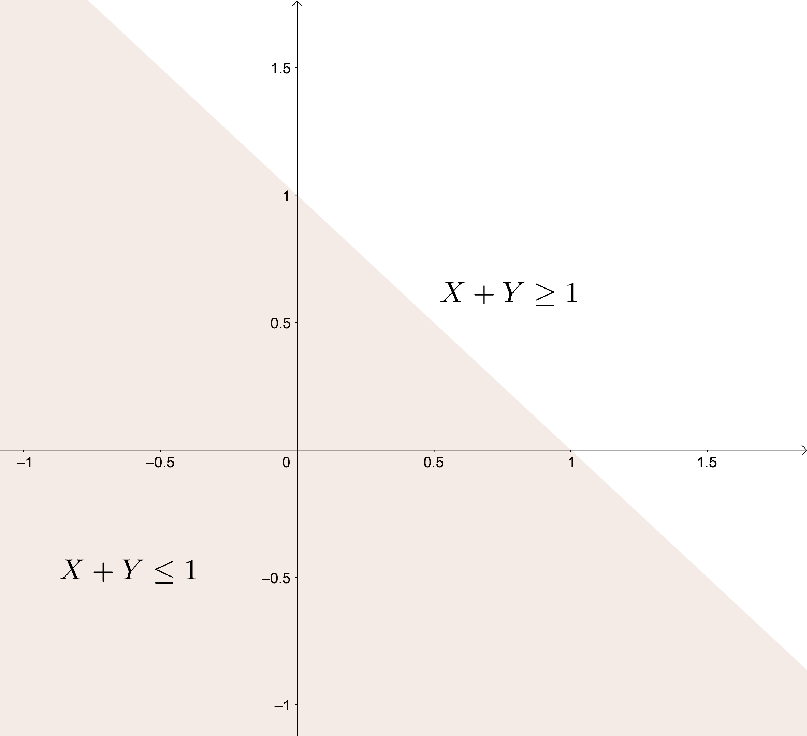
Suceso: \(\{X^2+Y^2\leq 4\}\). Sería la zona sombreada del gráfico siguiente:
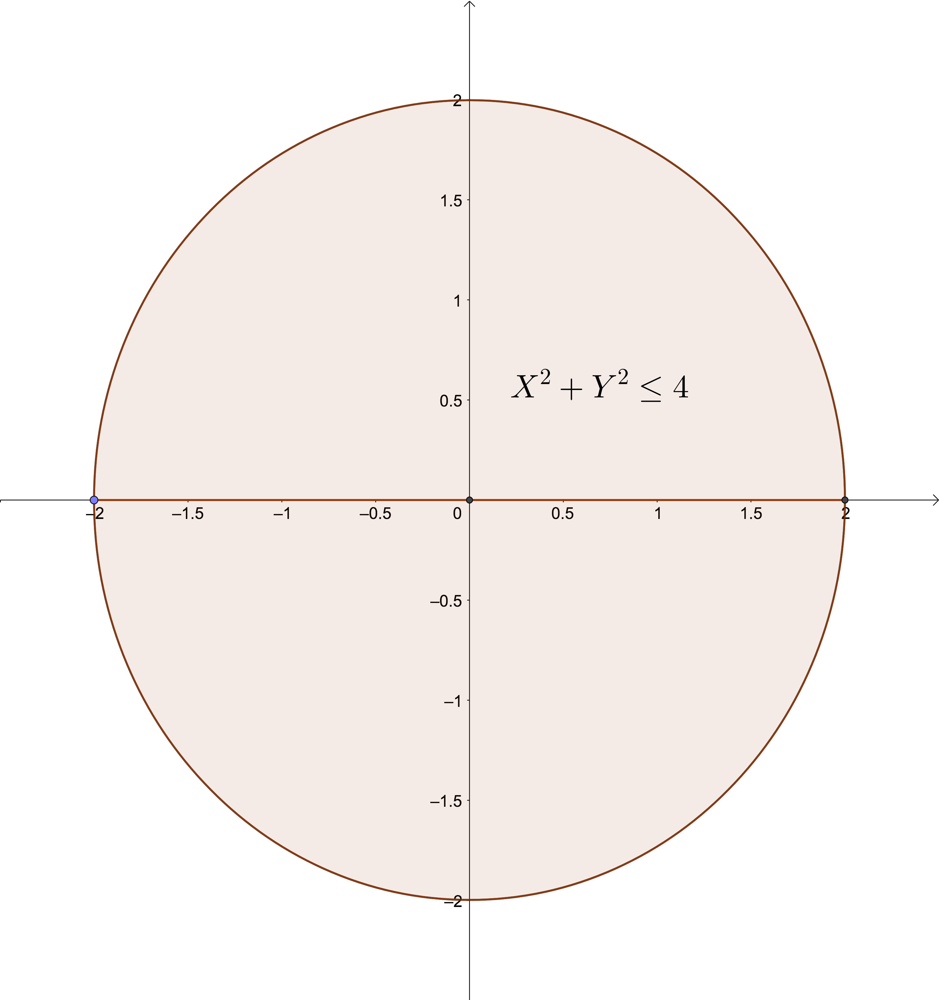
Suceso: \(\{\max\{X,Y\}\geq 1\}\). Sería la zona sombreada del gráfico siguiente:
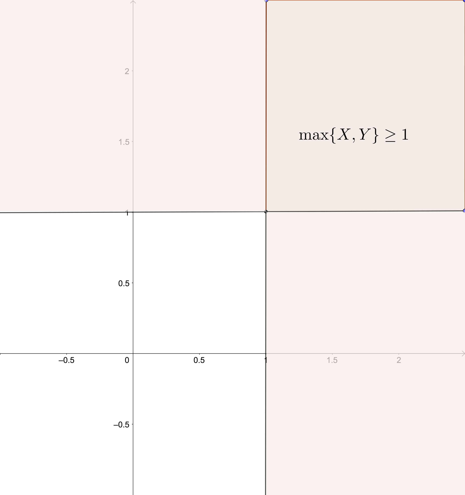
La probabilidad de que la variable bidimensional pertenezca a una cierta región del plano \(B\) se define de la forma siguiente: \[ P((X,Y)\in B)=P\{w\in \Omega,\ |\ (X(w),Y(w))\in B\}, \] o sea, la probabilidad anterior es la probabilidad del suceso formado por los elementos de \(w\in\Omega\) que cumplen que su imagen por la variable aleatoria bidimensional \((X,Y)\) esté en \(B\).
Por ejemplo, si consideramos \(B=\{X+Y\leq 1\}\), \(P((X,Y)\in B)\) sería la probabilidad del suceso formado por los elementos \(w\) de \(\Omega\) tal que la suma de las imágenes por \(X\) e \(Y\) sea menor o igual que 1: \(X(w)+Y(w)\leq 1\).
5.2 Función de distribución conjunta
5.2.1 Definición
Dada una variable aleatoria bidimensional \((X,Y)\), queremos estudiar cómo se distribuye la probabilidad de sucesos cualesquiera de la forma \(\{(X,Y)\in B\}\), donde \(B\) es una región del plano.
Para ello, definimos la función de distribución conjunta:
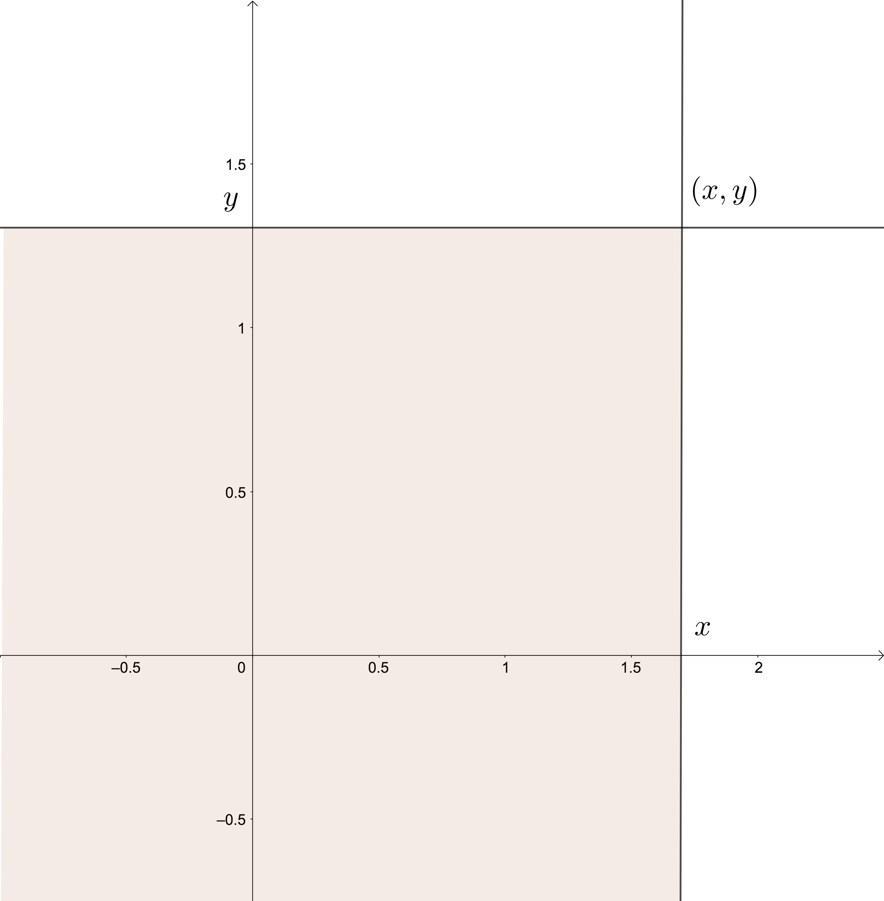
Entonces la función de distribución conjunta en el valor \((x,y)\) es la probabilidad del suceso formado por aquellos elementos tal que la imagen por la variable aleatoria bidimensional \((X,Y)\) caen dentro de la región sombreada en el gráfico anterior:
\[ \begin{array}{rl} F_{XY}(x,y) & =P\{w\in\Omega,\ |\ (X(w),Y(w))\in (-\infty,x]\times (-\infty,y]\} \\ & = P\{w\in\Omega,\ |\ X(w)\leq x,\ Y(w)\leq y\}. \end{array} \]
5.2.2 Propiedades
Sea \((X,Y)\) una variable bidimensional. Sean \(F_{XY}\) su función de distribución conjunta. Dicha función satisface las propiedades siguientes:
La función de distribución conjunta es no decreciente en cada una de las variables: \[ \mbox{Si }x_1\leq x_2, \mbox{ y }y_1\leq y_2,\mbox{ entonces, }F_{XY}(x_1,y_1)\leq F_{XY}(x_2,y_2). \]
\(F_{XY}(x,-\infty)=F_{XY}(-\infty,y)=0,\) \(F_{XY}(\infty,\infty)=1\), para todo \(x,y\in\mathbb{R}\).
Las variables aleatorias \(X\) e \(Y\) se llaman variables aleatorias marginales y sus funciones de distribución \(F_X\) y \(F_Y\) pueden hallarse de la forma siguiente como función de la función de distribución conjunta \(F_{XY}\): \[ F_X(x)=F_{XY}(x,\infty),\ F_Y(y)=F_{XY}(\infty,y), \] para todo \(x,y\in\mathbb{R}\).
La función de distribución conjunta es continua por el “norte” y por el “este”: \[ \begin{array}{rl} \lim_{x\to a^+}F_{XY}(x,y) & =\lim_{x\to a, x> a}F_{XY}(x,y)=F_{XY}(a,y), \\ \lim_{y\to b^+}F_{XY}(x,y) & =\lim_{y\to b, y> b}F_{XY}(x,y)=F_{XY}(x,b), \end{array} \] para todo \(a,b\in\mathbb{R}\). Ver figura siguiente.

- Dados \(x_1<x_2\) y \(y_1<y_2\), consideramos \(B\) el rectángulo de vértices \((x_1,y_1)\), \((x_1,y_2)\), \((x_2,y_1)\) y \((x_2,y_2)\): \((x_1,x_2]\times (y_1,y_2]\). Entonces, \[ \begin{array}{rl} P((X,Y)\in B) = & F_{XY}(x_2,y_2)-F_{XY}(x_2,y_1)-F_{XY}(x_1,y_2)\\ & +F_{XY}(x_1,y_1). \end{array} \]
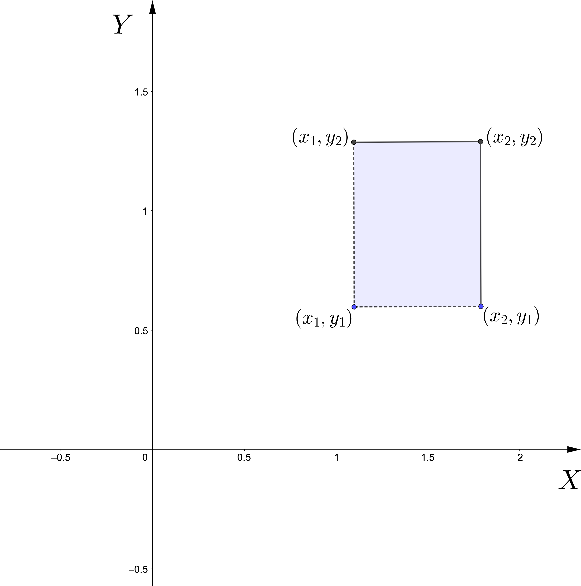
Ejemplo
Consideremos una variable aleatoria bidimensional \((X,Y)\) con función de distribución conjunta: \[ F_{XY}(x,y)=\begin{cases} 0, & \mbox{si }x<0,\mbox{ o }y<0,\\ xy, & \mbox{si }0\leq x\leq 1,\ 0\leq y\leq 1, \\ x, & \mbox{si }0\leq x\leq 1,\ y> 1, \\ y, & \mbox{si }0\leq y\leq 1,\ x> 1, \\ 1, & x\geq 1,\ y\geq 1. \end{cases} \] En la figura siguiente, hemos representado por zonas cómo está definida \(F_{XY}\).

Comprobemos algunas de las propiedades que hemos enunciado anteriormente:
Claramente \(F_{XY}(x,-\infty)=F_{XY}(-\infty,y)=0\) ya que \(F_{XY}(x,y)=0\) si \(x<0\) o \(y<0\). Por tanto, si hacemos tender \(x\) o \(y\) hacia \(-\infty\), obtendremos que \(F_{XY}(x,-\infty)=F_{XY}(-\infty,y)=0\).
De la misma manera \(F_{XY}(\infty,\infty)=1\) ya que \(F_{XY}(x,y)=1\) para \(x>1\) e \(y>1\). Por tanto, si hacemos tender \(x\) e \(y\) hacia \(\infty\), obtendremos \(F_{XY}(\infty,\infty)=1\).
Hallemos las marginales: \[ F_X(x)=F_{XY}(x,\infty)=\begin{cases} 0, & \mbox{ si }x<0,\\ x, & \mbox{ si } 0\leq x\leq 1,\\ 1, & \mbox{ si } x>1. \end{cases} \] Para ver la expresión anterior basta trazar la recta vertical \(X=x\) en el gráfico anterior y ver hacia dónde tiende a medida que la \(y\) se va hacia \(\infty\).
¿Habéis averiguado cuál es la distribución de \(X\)?
¡Efectivamente!, \(X\) es la uniforme en el intervalo \((0,1)\).
Dejamos como ejercicio hallar la distribución marginal para la variable \(Y\).
- Comprobemos que \(F_{XY}\) es continua por el “norte” y el “este” en el punto \((1,1)\) que sería un punto problemático: \[ \lim_{x\to 1,x> 1} F_{XY}(x,1)=\lim_{x\to 1,x> 1} 1 = F_{XY}(1,1),\ \lim_{y\to 1,y> 1} F_{XY}(1,y)=\lim_{y\to 1,y> 1} 1 = F_{XY}(1,1). \]
Hagamos un gráfico 3D de la función de distribución conjunta usando la función persp de R para \(x\) e \(y\) entre -2 y 2.
Primero definimos la función y luego la dibujamos:
f.dist.con = function(x,y){ifelse(x<0 | y<0,0,
ifelse(x>=0 & x<=1 & y>=0 & y<=1,x*y,
ifelse(x>=0 & x<=1 & y >1,x,ifelse(y>=0 & y<=1 & x>1,y,1))))}
x=seq(from=-2,to=2,by=0.1)
y=seq(from=-2,to=2,by=0.1)
z=outer(x,y,f.dist.con)
persp(x,y,z,theta=50,phi=40,col="blue",shade=0.25,ticktype="detailed")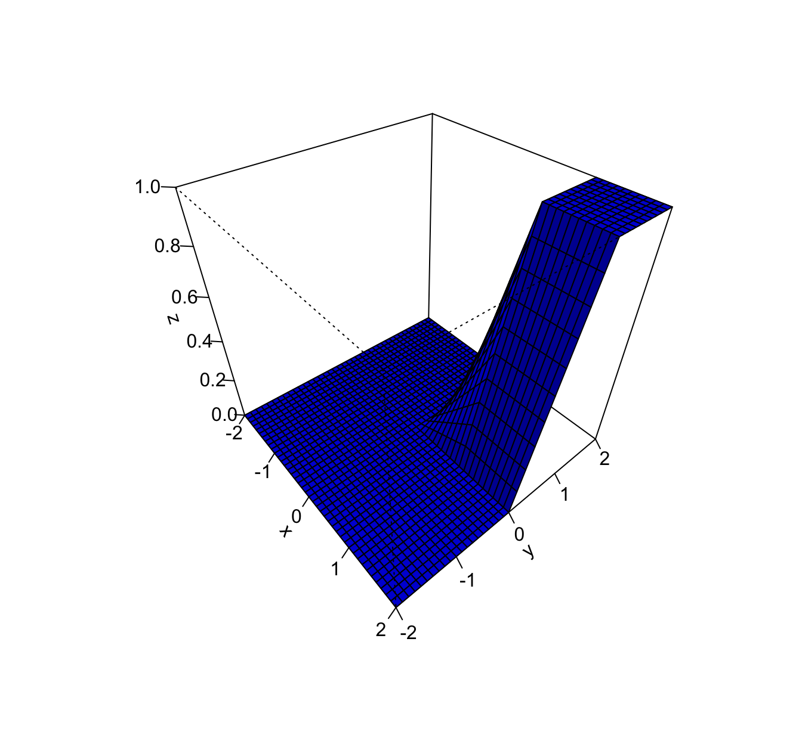
Ejemplo: dos lanzamientos de un dado no trucado
Consideremos el experimento aleatorio de lanzar dos veces un dado no trucado.
Sea \((S,P)\) la variable aleatoria bidimensional que nos da la suma y el producto de los resultados obtenidos, respectivamente.
La función de distribución conjunta en el valor \((3,4)\) será: \[ F_{XY}(3,4) = P(S\leq 3,\ P\leq 4)=P\{(1,1), (1,2), (2,1) \}=\frac{3}{36}=\frac{1}{12}\approx 0.083, \] ya que \(\Omega\) tiene en total \(36\) resultados: \[ \Omega =\{(1,1),(1,2).\ldots, (6,6)\}. \] y los únicos resultados en los que la suma es menor o igual que 3 y el producto menor o igual que 4 son \((1,1)\) (suma 2 producto 1), \((1,2)\) (suma 3 y producto 2) y \((2,1)\) (suma 3 y producto 2).
Ejercicio
Hallar el valor de la función de distribución conjunta para la variable aleatoria bidimensional anterior \((S,P)\) en los valores \((i,j)\) siguientes: \((4,5),\ (4,9),\ (5,9),\ (6,10)\).
5.3 Variables aleatorias bidimensionales discretas
En la mayoría de los casos, dicho conjunto será un subconjunto de los enteros naturales.
Ejemplo
La variable aleatoria bidimensional anterior que nos daba la suma y el producto de los resultados obtenidos por los dos lanzamientos, respectivamente es discreta ya que: \[ \begin{array}{rl} (S,P)(\Omega) & =\{(2,1),(3,2),(4,3),(4,4),(5,4),(5,6),(6,5),(6,8),(6,9),(7,6),(7,10),(7,12),(8,12),\\ & (8,15),(8,16),(9,18),(9,20),(10,24),(10,25),(11,30),(12,36)\}. \end{array} \]
Comprobar que el conjunto \((S,P)(\Omega)\) dado por el ejemplo coincide con la expresión dada. O sea, hallar el conjunto \((S,P)(\Omega)\): \[ \begin{array}{rl} (S,P): \Omega & \longrightarrow \mathbb{R}^2\\ (1,1) & \longrightarrow (S(1,1),P(1,1))=(2,1),\\ (1,2) & \longrightarrow (S(1,2),P(1,2))=(3,2),\\ \vdots & \vdots \\ (6,6) & \longrightarrow (S(6,6),P(6,6))=(12,36). \end{array} \]
5.3.1 Función de probabilidad conjunta
Por tanto, de cara a calcular \(P_{XY}\) basta calcular \(P_{XY}(x_i,y_j)\) para \((x_i,y_j)\in (X,Y)(\Omega)\):
| \(X/Y\) | \(y_1\) | \(y_2\) | \(\ldots\) | \(y_N\) |
|---|---|---|---|---|
| \(x_1\) | \(P_{XY}(x_1,y_1)\) | \(P_{XY}(x_1,y_2)\) | \(\ldots\) | \(P_{XY}(x_1,y_N)\) |
| \(x_2\) | \(P_{XY}(x_2,y_1)\) | \(P_{XY}(x_2,y_2)\) | \(\ldots\) | \(P_{XY}(x_2,y_N)\) |
| \(\vdots\) | \(\vdots\) | \(\vdots\) | \(\vdots\) | \(\vdots\) |
| \(x_M\) | \(P_{XY}(x_M,y_1)\) | \(P_{XY}(x_M,y_2)\) | \(\ldots\) | \(P_{XY}(x_M,y_N)\) |
5.3.1.1 Ejemplos
Ejemplo de la suma y el producto de los resultados de dos lanzamientos de un dado
La función de probabilidad conjunta será:| \(S/P\) | 1 | 2 | 3 | 4 | 5 | 6 | 8 | 9 | 10 | 12 | 15 | 16 | 18 | 20 | 24 | 25 | 30 | 36 |
|---|---|---|---|---|---|---|---|---|---|---|---|---|---|---|---|---|---|---|
| 2 | \(\frac{1}{36}\) | 0 | 0 | 0 | 0 | 0 | 0 | 0 | 0 | 0 | 0 | 0 | 0 | 0 | 0 | 0 | 0 | 0 |
| 3 | 0 | \(\frac{2}{36}\) | 0 | 0 | 0 | 0 | 0 | 0 | 0 | 0 | 0 | 0 | 0 | 0 | 0 | 0 | 0 | 0 |
| 4 | 0 | 0 | \(\frac{2}{36}\) | \(\frac{1}{36}\) | 0 | 0 | 0 | 0 | 0 | 0 | 0 | 0 | 0 | 0 | 0 | 0 | 0 | 0 |
| 5 | 0 | 0 | 0 | \(\frac{2}{36}\) | 0 | \(\frac{2}{36}\) | 0 | 0 | 0 | 0 | 0 | 0 | 0 | 0 | 0 | 0 | 0 | 0 |
| 6 | 0 | 0 | 0 | 0 | \(\frac{2}{36}\) | 0 | \(\frac{2}{36}\) | \(\frac{1}{36}\) | 0 | 0 | 0 | 0 | 0 | 0 | 0 | 0 | 0 | 0 |
| \(S/P\) | 1 | 2 | 3 | 4 | 5 | 6 | 8 | 9 | 10 | 12 | 15 | 16 | 18 | 20 | 24 | 25 | 30 | 36 |
|---|---|---|---|---|---|---|---|---|---|---|---|---|---|---|---|---|---|---|
| 7 | 0 | 0 | 0 | 0 | 0 | \(\frac{2}{36}\) | 0 | 0 | \(\frac{2}{36}\) | \(\frac{2}{36}\) | 0 | 0 | 0 | 0 | 0 | 0 | 0 | 0 |
| 8 | 0 | 0 | 0 | 0 | 0 | 0 | 0 | 0 | 0 | \(\frac{2}{36}\) | \(\frac{2}{36}\) | \(\frac{1}{36}\) | 0 | 0 | 0 | 0 | 0 | 0 |
| 9 | 0 | 0 | 0 | 0 | 0 | 0 | 0 | 0 | 0 | 0 | 0 | 0 | \(\frac{2}{36}\) | \(\frac{2}{36}\) | 0 | 0 | 0 | 0 |
| 10 | 0 | 0 | 0 | 0 | 0 | 0 | 0 | 0 | 0 | 0 | 0 | 0 | 0 | 0 | \(\frac{2}{36}\) | \(\frac{1}{36}\) | 0 | 0 |
| 11 | 0 | 0 | 0 | 0 | 0 | 0 | 0 | 0 | 0 | 0 | 0 | 0 | 0 | 0 | 0 | 0 | \(\frac{2}{36}\) | 0 |
| 12 | 0 | 0 | 0 | 0 | 0 | 0 | 0 | 0 | 0 | 0 | 0 | 0 | 0 | 0 | 0 | 0 | 0 | \(\frac{1}{36}\) |
Vamos a definir unas funciones en R para calcular la función de probabilidad conjunta.
La función pdado devuelve la probabilidad de que salga la cara x en un dado de n caras donde por defecto \(n=6\):
Vamos a probarla. La probabilidad de que salga la cara 4 en un dado de 6 caras vale:
## [1] 0.1666667La función pdado2 devuelve la probabilidad de que salgan las caras x e y cuando lanzamos un dado de n caras dos veces:
Por ejemplo la probabilidad de que salgan las caras 3 y 4 en un dado de 6 caras será:
## [1] 0.02777778La función psum_prod nos da la función de probabilidad conjunta de la suma y el producto cuando lanzamos dos dados de n caras:
psum_prod=function(x,y,n=6){
Dxy=data.frame(d1=rep(1:n,each=n),d2=rep(1:n,times=n))
Dxy$suma=Dxy$d1+Dxy$d2
Dxy$producto=Dxy$d1*Dxy$d2
aux=Dxy[Dxy$suma==x& Dxy$producto==y,]
sum(apply(aux[,1:2],FUN=function(x) {pdado2(x[1],x[2],n=n)},1 ))
}Por ejemplo, sabemos que \(P_{SP}(6,8)=\frac{2}{36}=0.0556\):
## [1] 0.05555556Para construir la tabla de la función de probabilidad conjunta para la variable \((S,P)\) hacemos lo siguiente:
n=6
Dxy=data.frame(d1=rep(1:n,each=n),d2=rep(1:n,times=n))
Dxy$suma=Dxy$d1+Dxy$d2
Dxy$producto=Dxy$d1*Dxy$d2
tabla.func.prob.conjunta=prop.table(table(Dxy$suma,Dxy$producto))
knitr::kable(round(tabla.func.prob.conjunta[1:6,1:9],4))| 1 | 2 | 3 | 4 | 5 | 6 | 8 | 9 | 10 | |
|---|---|---|---|---|---|---|---|---|---|
| 2 | 0.0278 | 0.0000 | 0.0000 | 0.0000 | 0.0000 | 0.0000 | 0.0000 | 0.0000 | 0.0000 |
| 3 | 0.0000 | 0.0556 | 0.0000 | 0.0000 | 0.0000 | 0.0000 | 0.0000 | 0.0000 | 0.0000 |
| 4 | 0.0000 | 0.0000 | 0.0556 | 0.0278 | 0.0000 | 0.0000 | 0.0000 | 0.0000 | 0.0000 |
| 5 | 0.0000 | 0.0000 | 0.0000 | 0.0556 | 0.0000 | 0.0556 | 0.0000 | 0.0000 | 0.0000 |
| 6 | 0.0000 | 0.0000 | 0.0000 | 0.0000 | 0.0556 | 0.0000 | 0.0556 | 0.0278 | 0.0000 |
| 7 | 0.0000 | 0.0000 | 0.0000 | 0.0000 | 0.0000 | 0.0556 | 0.0000 | 0.0000 | 0.0556 |
| 12 | 15 | 16 | 18 | 20 | 24 | 25 | 30 | 36 | |
|---|---|---|---|---|---|---|---|---|---|
| 2 | 0.0000 | 0 | 0 | 0 | 0 | 0 | 0 | 0 | 0 |
| 3 | 0.0000 | 0 | 0 | 0 | 0 | 0 | 0 | 0 | 0 |
| 4 | 0.0000 | 0 | 0 | 0 | 0 | 0 | 0 | 0 | 0 |
| 5 | 0.0000 | 0 | 0 | 0 | 0 | 0 | 0 | 0 | 0 |
| 6 | 0.0000 | 0 | 0 | 0 | 0 | 0 | 0 | 0 | 0 |
| 7 | 0.0556 | 0 | 0 | 0 | 0 | 0 | 0 | 0 | 0 |
| 1 | 2 | 3 | 4 | 5 | 6 | 8 | 9 | 10 | |
|---|---|---|---|---|---|---|---|---|---|
| 8 | 0 | 0 | 0 | 0 | 0 | 0 | 0 | 0 | 0 |
| 9 | 0 | 0 | 0 | 0 | 0 | 0 | 0 | 0 | 0 |
| 10 | 0 | 0 | 0 | 0 | 0 | 0 | 0 | 0 | 0 |
| 11 | 0 | 0 | 0 | 0 | 0 | 0 | 0 | 0 | 0 |
| 12 | 0 | 0 | 0 | 0 | 0 | 0 | 0 | 0 | 0 |
| 12 | 15 | 16 | 18 | 20 | 24 | 25 | 30 | 36 | |
|---|---|---|---|---|---|---|---|---|---|
| 8 | 0.0556 | 0.0556 | 0.0278 | 0.0000 | 0.0000 | 0.0000 | 0.0000 | 0.0000 | 0.0000 |
| 9 | 0.0000 | 0.0000 | 0.0000 | 0.0556 | 0.0556 | 0.0000 | 0.0000 | 0.0000 | 0.0000 |
| 10 | 0.0000 | 0.0000 | 0.0000 | 0.0000 | 0.0000 | 0.0556 | 0.0278 | 0.0000 | 0.0000 |
| 11 | 0.0000 | 0.0000 | 0.0000 | 0.0000 | 0.0000 | 0.0000 | 0.0000 | 0.0556 | 0.0000 |
| 12 | 0.0000 | 0.0000 | 0.0000 | 0.0000 | 0.0000 | 0.0000 | 0.0000 | 0.0000 | 0.0278 |
lo cual finaliza nuestros cálculos en R.
5.3.1.2 Propiedades de la función de probabilidad conjunta
Sea \((X,Y)\) una variable aleatoria bidimensional discreta con conjunto de valores \((X,Y)(\Omega)=\{(x_i,y_j)\, i=1,2,\ldots,\ j=1,2,\ldots\}\). Entonces su función de probabilidad conjunta verifica las propiedades siguientes:
La suma de todos los valores de la función de probabilidad conjunta sobre el conjunto de valores siempre vale 1: \[\sum_{i}\sum_j P_{XY}(x_i,y_j)=1.\]
Sea \(B\) una región del plano. El valor de la probabilidad \(P((X,Y)\in B)\) se puede calcular de la forma siguiente: \[ P((X,Y)\in B) =\sum_{(x_i,y_j)\in B} P_{XY}(x_i,y_j). \] O sea, la probabilidad de que la variable bidimensional coja valores en \(B\) es igual a la suma de todos aquellos valores de la función de probabilidad conjunta que están en \(B\).
En particular, tenemos la relación siguiente que relaciona la función de distribución conjunta con la función de probabilidad conjunta: \[ F_{XY}(x,y)=\sum_{x_i\leq x, y_j\leq y} P_{XY}(x_i,y_j). \] Dicha expresión se deduce de la expresión anterior considerando \(B=(-\infty,x]\times (-\infty,y]\).
Ejemplo de la suma y el producto de los resultados de dos lanzamientos de un dado
Ejercicio
Comprobad usando la tabla de la función de probabilidad conjunta que la suma de todos sus valores suma 1.
Apliquemos la fórmula que relaciona la función de distribución conjunta con la función de probabilidad conjunta para \((x,y)=(5,4)\).
Recordemos la tabla de la función de probabilidad conjunta hasta \(S=5\) y \(P=4\):
| \(S/P\) | 1 | 2 | 3 | 4 | |
|---|---|---|---|---|---|
| 2 | \(\frac{1}{36}\) | 0 | 0 | 0 | \(\ldots\) |
| 3 | 0 | \(\frac{2}{36}\) | 0 | 0 | \(\ldots\) |
| 4 | 0 | 0 | \(\frac{2}{36}\) | \(\frac{1}{36}\) | \(\ldots\) |
| 5 | 0 | 0 | 0 | \(\frac{2}{36}\) | \(\ldots\) |
| \(\vdots\) | \(\vdots\) | \(\vdots\) | \(\vdots\) | \(\vdots\) | \(\vdots\) |
Observamos que los únicos valores \((x_i,y_j)\in (X,Y)(\Omega)\) que verifican \(x_i\leq 5\) y \(y_j\leq 4\) son \((2,1)\), \((3,2)\), \((4,3)\), \((4,4)\) y \((5,4)\). Por tanto, \[ \begin{array}{rl} F_{SP}(5,4) & = P_{SP}(2,1)+P_{SP}(3,2)+P_{SP}(4,3)+P_{SP}(4,4)+P_{SP}(5,4) \\ & = \frac{1}{36}+\frac{2}{36}+\frac{2}{36}+\frac{1}{36}+\frac{2}{36} = \frac{8}{36}=\frac{2}{9}. \end{array} \] O sea, “a la larga”, de cada 9 ocasiones que lanzamos un dado dos veces, en 2 ocasiones obtenemos un resultado cuya suma es menor o igual que 5 y cuyo producto es menor o igual que 4.
Para definir la función de distribución conjunta definimos la función siguiente en R:
func.dist.conj = function(x,y,n=6){
sum(tabla.func.prob.conjunta[as.integer(rownames(tabla.func.prob.conjunta))<=x,
as.integer(colnames(tabla.func.prob.conjunta)) <=y])
}Comprobemos que \(F_{SP}(5,4)=\frac{2}{9}=0.2222\):
## [1] 0.22222225.3.2 Variables aleatorias marginales
Consideremos una variable aleatoria bidimensional discreta \((X,Y)\) con función de probabilidad conjunta \(P_{XY}(x_i,y_j)\), con \((x_i,y_j)\in (X,Y)(\Omega)\), \(i=1,2,\ldots\), \(j=1,2,\ldots\).
La tabla de la función de probabilidad conjunta contiene suficiente información para obtener las funciones de probabilidad de las variables \(X\) e \(Y\).
Dichas variables \(X\) e \(Y\) se denominan distribuciones marginales y sus correspondientes funciones de probabilidad, funciones de probabilidad marginales \(P_X\) de la variable \(X\) y \(P_Y\) de la variable \(Y\).
Veamos cómo obtener \(P_X\) y \(P_Y\) a partir de la tabla \(P_{XY}\).
Las funciones de probabilidad marginales \(P_X(x_i)\) y \(P_Y(y_j)\) se calculan usando las expresiones siguientes: \[ \begin{array}{rl} P_X(x_i) & = \sum_{j=1} P_{XY}(x_i,y_j),\ i=1,2,\ldots,\\ P_Y(y_j) & = \sum_{i=1} P_{XY}(x_i,y_j),\ \ j=1,2,\ldots \end{array} \]
O sea, si pensamos \(P_{XY}\) como una tabla bidimensional donde en la primera fila están los valores de la variable \(Y\) (\(y_1,y_2,\ldots\)) y en la primera columna están los valores de la variable \(X\) (\(x_1,x_2,\ldots\)), para obtener la función de probabilidad marginal de la variable \(X\) en el valor \(x_i\), \(P_X(x_i)\), hay que sumar todos los valores de \(P_{XY}(x_i,y_j)\) correspondientes a la fila \(i\)-ésima y para obtener la función de probabilidad marginal de la variable \(Y\) en el valor \(y_j\), \(P_Y(y_j)\), hay que sumar todos los valores de \(P_{XY}(x_i,y_j)\) correspondientes a la columna \(j\)-ésima.
5.3.2.1 Ejemplo
Ejemplo de la suma y el producto de los resultados de dos lanzamientos de un dado
Hallemos la función de probabilidad marginal para la suma de los resultados \(S\) usando la expresión vista: \[ \begin{array}{rl} P_S(2) & = P_{SP}(2,1)=\frac{1}{36},\\ P_S(3) & = P_{SP}(3,2)=\frac{2}{36},\\ P_S(4) & = P_{SP}(4,3)+P_{SP}(4,4)=\frac{2}{36}+\frac{1}{36}=\frac{3}{36}=\frac{1}{12},\\ P_S(5) & = P_{SP}(5,4)+P_{SP}(5,6)=\frac{2}{36}+\frac{2}{36}=\frac{4}{36}=\frac{1}{9},\\ P_S(6) & = P_{SP}(6,5)+P_{SP}(6,8)+P_{SP}(6,9)=\frac{2}{36}+\frac{2}{36}+\frac{1}{36}=\frac{5}{36},\\ P_S(7) & = P_{SP}(7,6)+P_{SP}(7,10)+P_{SP}(7,12)=\frac{2}{36}+\frac{2}{36}+\frac{2}{36}=\frac{6}{36}=\frac{1}{6},\\ P_S(8) & = P_{SP}(8,12)+P_{SP}(8,15)+P_{SP}(8,16)=\frac{2}{36}+\frac{2}{36}+\frac{1}{36}=\frac{5}{36},\\ P_S(9) & = P_{SP}(9,18)+P_{SP}(9,20)=\frac{2}{36}+\frac{2}{36}=\frac{4}{36}=\frac{1}{9},\\ P_S(10) & = P_{SP}(10,24)+P_{SP}(10,25)=\frac{2}{36}+\frac{1}{36}=\frac{3}{36}=\frac{1}{12},\\ P_S(11) & = P_{SP}(11,30)=\frac{2}{36},\\ P_S(12) & = P_{SP}(12,36)=\frac{1}{36}. \end{array} \]
La función de probabilidad marginal de la suma \(S\) queda resumida en la tabla siguiente:
| \(S\) | 2 | 3 | 4 | 5 | 6 | 7 | 8 | 9 | 10 | 11 | 12 |
|---|---|---|---|---|---|---|---|---|---|---|---|
| \(P_S\) | \(\frac{1}{36}\) | \(\frac{2}{36}\) | \(\frac{3}{36}\) | \(\frac{4}{36}\) | \(\frac{5}{36}\) | \(\frac{6}{36}\) | \(\frac{5}{36}\) | \(\frac{4}{36}\) | \(\frac{3}{36}\) | \(\frac{2}{36}\) | \(\frac{1}{36}\) |
Para hallar la función de probabilidad marginal de la suma basta sumar las filas de la tabla que nos daba la función de probabilidad conjunta:
## 2 3 4 5 6 7 8
## 0.02777778 0.05555556 0.08333333 0.11111111 0.13888889 0.16666667 0.13888889
## 9 10 11 12
## 0.11111111 0.08333333 0.05555556 0.02777778De la misma manera, para hallar la función de probabilidad marginal del producto basta sumar las columnas de la tabla anterior:
## 1 2 3 4 5 6 8
## 0.02777778 0.05555556 0.05555556 0.08333333 0.05555556 0.11111111 0.05555556
## 9 10 12 15 16 18 20
## 0.02777778 0.05555556 0.11111111 0.05555556 0.02777778 0.05555556 0.05555556
## 24 25 30 36
## 0.05555556 0.02777778 0.05555556 0.027777785.4 Variables aleatorias bidimensionales continuas
5.4.1 Definición
Recordemos la definición de variable continua unidimensional: \(X\) es continua si existe una función \(f_X:\mathbb{R}\longrightarrow \mathbb{R}\), llamada función de densidad no negativa \(f_X(x)\geq 0\), para todo \(x\in\mathbb{R}\) tal que para cualquier intervalo \((a,b)\), la probabilidad de que \(X\) esté en \((a,b)\) se calcula de la forma siguiente: \[ P(X\in B)=P(a< X < b)=\int_B f_{X}(x)\,du=\int_a^b f_{X}(x)\,dx. \]
La generalización natural será, entonces:
5.4.1.1 Ejemplos
Ejemplo
Consideremos la función de densidad siguiente: \[ f_{XY}(x,y)=\begin{cases} 1, & \mbox{ si }0\leq x\leq 1,\ 0\leq y\leq 1, \\ 0, & \mbox{en caso contrario.} \end{cases} \] En este caso, si consideramos \(B=\left[-1,\frac{1}{2}\right]\times \left[-1,\frac{1}{2}\right]\), la probabilidad de que \((X,Y)\) esté en \(B\) se calcularía de la forma siguiente: \[ P((X,Y)\in B)=\int_{-1}^{\frac{1}{2}}\int_{-1}^{\frac{1}{2}} f_{XY}(x,y)\, dx\, dy =\int_0^{\frac{1}{2}}\int_0^{\frac{1}{2}} 1\, dx\,dy=\int_0^{\frac{1}{2}} 1\, dx\int_0^{\frac{1}{2}} 1\, dy=\frac{1}{2}\cdot\frac{1}{2}=\frac{1}{4}. \] En la figura siguiente hemos dibujado en morado la región donde \(f_{XY}\) no es cero, o sea \([0,1]\times [0,1]\), la región \(B\) en verde y la región intersección de las dos anteriores que es donde tenemos que integrar la función de densidad dada.
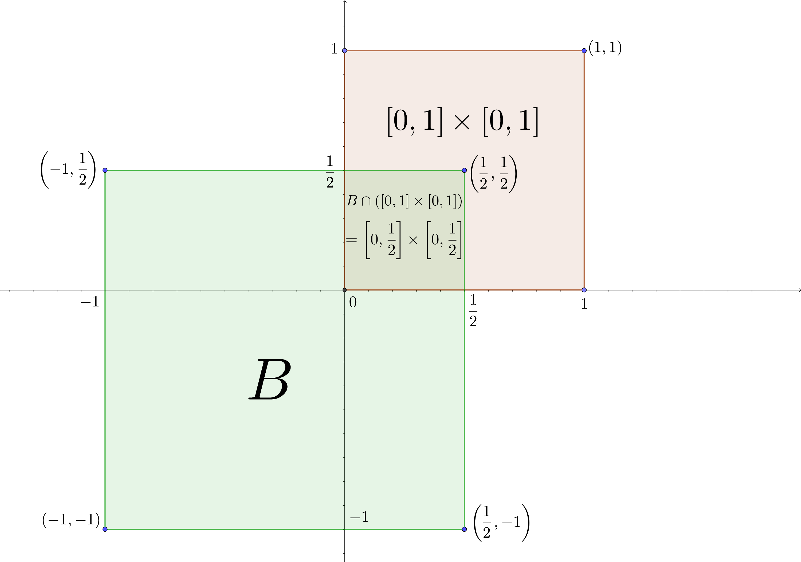
5.4.2 Propiedades de la función de densidad
Sea \((X,Y)\) una variable aleatoria bidimensional continua con función de densidad \(f_{XY}\). Entonces dicha función verifica las propiedades siguientes:
La integral de dicha función sobre todo el plano vale 1: \[ \int\int_{\mathbb{R}^2} f_{XY}(x,y)\,dx\,dy =1. \] Para ver dicha propiedad, basta considerar \(B=\mathbb{R}^2\), tener en cuenta que el suceso \((X,Y)\in \mathbb{R}^2\) es el total \(\Omega\) y aplicar la definición de \(f_{XY}\): \[ P((X,Y)\in \mathbb{R}^2)=1= \int\int_{\mathbb{R}^2} f_{XY}(x,y)\,dx\,dy. \]
La relación que hay entre la función de distribución \(F_{XY}\) y la función de densidad \(f_{XY}\) es la siguiente: \[ F_{XY}(x,y)=\int_{-\infty}^x\int_{-\infty}^y f_{XY}(u,v)\,du\,dv. \] Para ver dicha propiedad, basta considerar \(B=(-\infty,x]\times (-\infty,y]\) y aplicar la definición de función de distribución: \[ F_{XY}(x,y)=P((X,Y)\in (-\infty,x]\times (-\infty,y])=\int_{-\infty}^x\int_{-\infty}^y f_{XY}(u,v)\,du\,dv. \]
La relación que hay entre la función de densidad \(f_{XY}\) y la función de distribución \(F_{XY}\) es la siguiente: \[ f_{XY}(x,y)=\frac{\partial^2 F_{XY}(x,y)}{\partial x\partial y}. \] Dicha propiedad se deduce de la anterior, derivando primero respecto a \(x\) y después respecto a \(y\) para eliminar las dos integrales.
Las funciones de densidad marginales de las variables \(X\) e \(Y\), \(f_X(x)\) y \(f_Y(y)\) respectivamente, se calculan de la forma siguiente: \[ f_X(x)=\int_{-\infty}^\infty f_{XY}(x,y)\, dy,\ f_Y(y)=\int_{-\infty}^\infty f_{XY}(x,y)\, dx \]
5.4.2.1 Ejemplos
Ejemplo anterior
Comprobemos las propiedades usando la función de densidad del ejemplo anterior: \(f_{XY}(x,y)=\begin{cases} 1, & \mbox{ si }0\leq x\leq 1,\ 0\leq y\leq 1, \\ 0, & \mbox{en caso contrario.} \end{cases}\)
La integral de \(f_{XY}\) sobre todo el plano vale 1: \[ \int\int_{\mathbb{R}^2} f_{XY}(x,y)\,dx\, dy=\int_0^1\int_0^1 1\, dx\, dv=\int_0^1 1\, dx\int_0^1 1\, dy=1\cdot 1=1. \]
Vamos a calcular la función de distribución \(F_{XY}\). Para ello dividimos el plano en 5 zonas tal como muestra la figura siguiente:
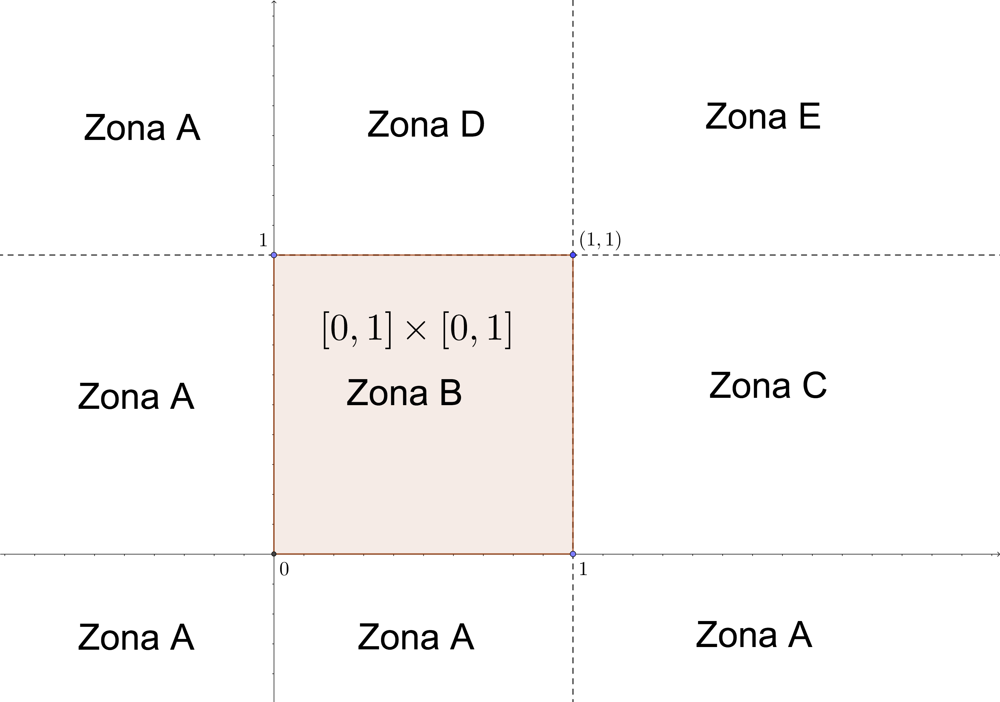
Sea \((x,y)\) un punto cualquiera de \(\mathbb{R}^2\). De cara a calcular \(F_{XY}(x,y)\) tenemos que averiguar el conjunto intersección siguiente: \(([0,1]\times [0,1])\cap ((-\infty,x]\times (-\infty,y])\) ya que el dominio donde \(f_{XY}\) es no nula es \([0,1]\times [0,1]\) y la función de distribución \(F_{XY}(x,y)\) valdrá: \[ F_{XY}(x,y)=\int_{-\infty}^x\int_{-\infty}^y f_{XY}(u,v)\,du\,dv =\int\int_{([0,1]\times [0,1])\cap ((-\infty,x]\times (-\infty,y])} f_{XY}(u,v)\,du\,dv. \]
- Caso \((x,y)\in \mbox{Zona A}\) o \(x<0\) o \(y<0\) En este caso: \(([0,1]\times [0,1])\cap ((-\infty,x]\times (-\infty,y])=\emptyset.\) Ver figura siguiente donde la zona morada \(([0,1]\times [0,1]\)) no se interseca con la zona verde (\((-\infty,x]\times (-\infty,y]\)).
Por tanto en este caso, \(F_{XY}(x,y)=0\).
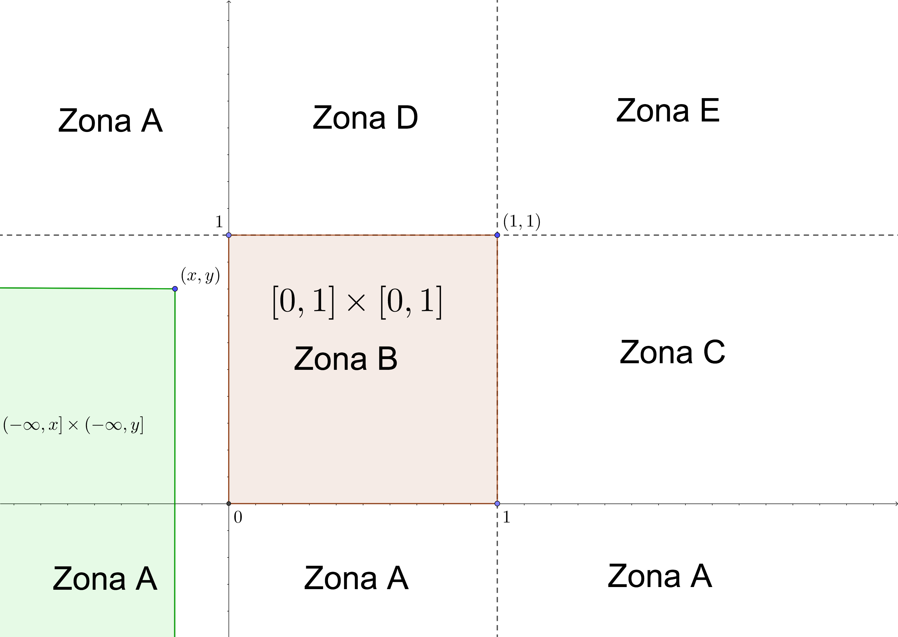
- Caso \((x,y)\in \mbox{Zona B}\), o \((x,y)\in [0,1]\times [0,1]\). En este caso: \(([0,1]\times [0,1])\cap ((-\infty,x]\times (-\infty,y])=[0,x]\times [0,y].\) Ver figura siguiente.
Por tanto en este caso, \[ F_{XY}(x,y)=\int_0^x \int_0^y 1\,du\,dv =\int_0^x 1\, du\int_0^y 1\, dy =x\cdot y. \]
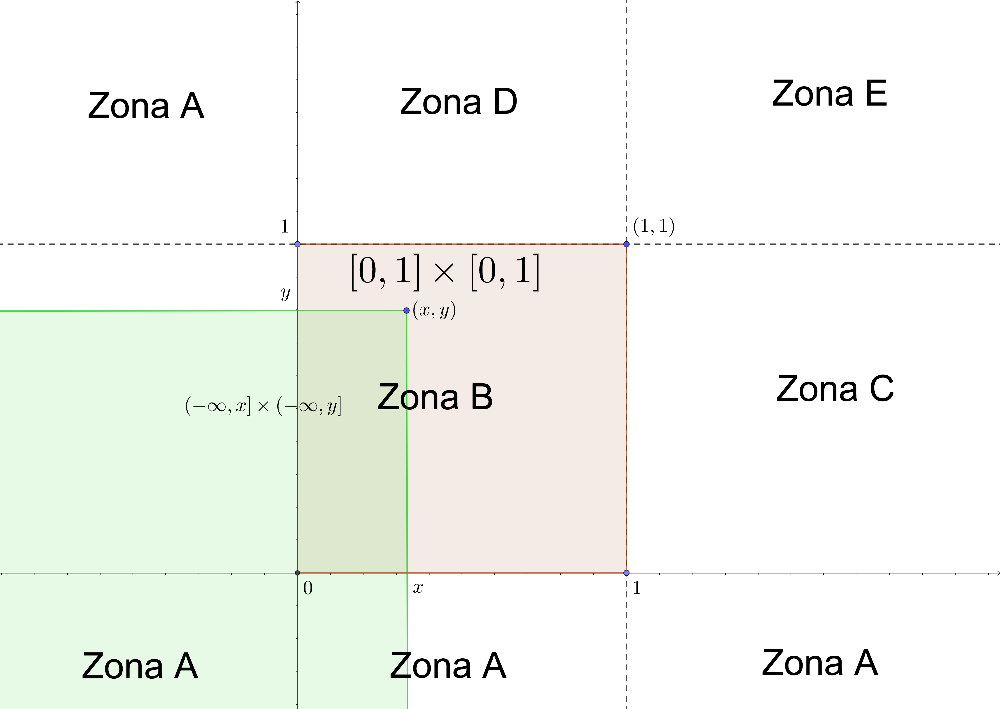
Dejamos como ejercicio los otros casos. En resumen: \[ F_{XY}(x,y)=\begin{cases} 0, & \mbox{ si }x<0, \mbox{ o }y<0,\\ x y, & \mbox{ si }(x,y)\in [0,1]\times [0,1],\\ x, & \mbox{ si }0\leq x\leq 1,\ y>1,\\ y, & \mbox{ si }x>1,\ 0\leq y\leq 1,\\ 1, & \mbox{ si } x>1,\ y>1. \end{cases} \] ¿Os suena?
Ver el primer ejemplo que pusimos del tema. Es la misma variable aleatoria bidimensional. Ahora sabemos que se trata de una variable aleatoria bidimensional continua.
Comprobemos seguidamente que si derivamos dos veces la expresión de \(F_{XY}\), primero respecto \(x\) y después respecto \(y\), obtendremos la función de densidad \(f_{XY}\).
Si derivamos respecto \(x\) obtenemos: \[ \frac{\partial F_{XY}(x,y)}{\partial x}=\begin{cases} 0, & \mbox{ si }x<0, \mbox{ o }y<0,\\ y, & \mbox{ si }(x,y)\in [0,1]\times [0,1],\\ 1, & \mbox{ si }0\leq x\leq 1,\ y>1,\\ 0, & \mbox{ si }x>1,\ 0\leq y\leq 1,\\ 0, & \mbox{ si } x>1,\ y>1. \end{cases} \] Si ahora derivamos respecto \(y\) obtenemos: \[ \frac{\partial^2 F_{XY}(x,y)}{\partial y\partial x}=\begin{cases} 0, & \mbox{ si }x<0, \mbox{ o }y<0,\\ 1, & \mbox{ si }(x,y)\in [0,1]\times [0,1],\\ 0, & \mbox{ si }0\leq x\leq 1,\ y>1,\\ 0, & \mbox{ si }x>1,\ 0\leq y\leq 1,\\ 0, & \mbox{ si } x>1,\ y>1, \end{cases} \] expresión que coincide con la función de densidad \(f_{XY}(x,y)\).
Hallemos para finalizar las funciones de densidad marginales. Empecemos con \(f_X(x)\): \[ f_X(x)=\int_{-\infty}^\infty f_{XY}(x,y)\, dy. \] Recordemos que la región donde no se anulaba la función de densidad conjunta \(f_{XY}\) era el cuadrado \([0,1]\times [0,1]\). Por tanto, fijado \(x\), el valor de \(f_X(x)\) será no nulo si la recta vertical \(X=x\) interseca dicho cuadrado. Y esto ocurre siempre que \(x\in (0,1)\). Por tanto, \[ f_X(x)=\begin{cases} \int_{0}^1 f_{XY}(x,y)\, dy=\int_{0}^1 1\, dy=1, & \mbox{ si }x\in (0,1),\\ 0, & \mbox{en caso contrario.} \end{cases} \] Por tanto la variable \(X\) sigue la distribución uniforme en el intervalo \([0,1]\).
Dejamos como ejercicio comprobar que la variable \(Y\) también sigue la distribución uniforme en el mismo intervalo.
5.4.2.2 Ejemplo 2
Ejemplo
Consideremos la variable aleatoria bidimensional \((X,Y)\) con función de densidad: \[ f_{XY}(x,y)=\begin{cases} c \mathrm{e}^{-x}\mathrm{e}^{-y}, & 0\leq y\leq x < \infty,\\ 0, & \mbox{ en caso contrario,} \end{cases} \] donde \(c\) es un valor que se tiene que hallar para que \(f_{XY}\) sea función de densidad.
Para hallar \(c\), hemos de imponer que la integral de la función anterior debe ser 1 sobre todo el plano \(\mathbb{R}^2\).
Primero fijémonos en como es la región de integración (zona morada de la figura). Fijado un valor \(x\geq 0\), el valor \(y\) va desde \(y=0\) hasta \(y=x\). Por tanto, para calcular el valor de \(c\), hay que hacer lo siguiente:
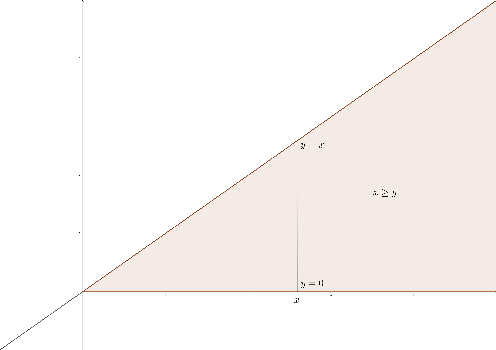
\[ \begin{array}{rl} 1 & =\int\int_{\mathbb{R}^2}f_{XY}(x,y)\, dx\, dy=\int_{x=0}^{x=\infty}\int_{y=0}^{y=x} c \mathrm{e}^{-x}\mathrm{e}^{-y} \, dy\, dx =c \int_{x=0}^{x=\infty}\mathrm{e}^{-x}\int_{y=0}^{y=x}\mathrm{e}^{-y}\, dy\, dx \\ & = c \int_{x=0}^{x=\infty}\mathrm{e}^{-x}\left[-\mathrm{e}^{-y}\right]_{y=0}^{y=x}\, dx = c \int_{x=0}^{x=\infty}\mathrm{e}^{-x}\left(1-\mathrm{e}^{-x}\right)\, dx =c \int_{x=0}^{x=\infty}\left(\mathrm{e}^{-x}-\mathrm{e}^{-2x}\right)\, dx \\ & = c \left[-\mathrm{e}^{-x}+\frac{1}{2}\mathrm{e}^{-2x}\right]_{x=0}^{x=\infty} = c\left(1-\frac{1}{2}\right)=\frac{c}{2}. \end{array} \]
El valor de \(c\) será \(c=2\).
Vamos a calcular seguidamente su función de distribución.
Fijémonos que, en este caso, si \(x<0\) o \(y<0\), \(F_{XY}(x,y)=0\), ya que el dominio \(B=(-\infty,x]\times (-\infty,y]\) no interseca la zona morada del gráfico anterior.
Suponemos entonces que \(x\geq 0\) e \(y\geq 0\).
Vamos a considerar dos casos:
\(x\leq y\). Ver zona verde del gráfico siguiente.
\(x\geq y\). Ver zona morada del gráfico siguiente.

- Caso \(x\leq y\) (zona verde de la figura adjunta). En este caso, si hacemos la intersección de la región \(B=(-\infty,x]\times (-\infty,y]\) (zona azul) con la zona morada o región donde \(f_{XY}(x,y)\neq 0\) obtenemos el triángulo \(T_{x,y}=\{(u,v)\in\mathbb{R}^2,\ 0\leq u\leq x,\ 0\leq v\leq u\}.\) Ver figura adjunta.
Por tanto, \[ \begin{array}{rl} F_{XY}(x,y) & =\int_{u=0}^{u=x}\int_{v=0}^{v=u} f_{XY}(u,v)\,dv\,du= 2 \int_{u=0}^{u=x} \mathrm{e}^{-u}\int_{v=0}^{v=u} \mathrm{e}^{-v}\,dv\,du = 2 \int_{u=0}^{u=x} \mathrm{e}^{-u}\left[-\mathrm{e}^{-v}\right]_{v=0}^{v=u}\, du \\ & = 2 \int_{u=0}^{u=x} \mathrm{e}^{-u} (1-\mathrm{e}^{-u})\, du =2 \int_{u=0}^{u=x} \left(\mathrm{e}^{-u}-\mathrm{e}^{-2u}\right)\, du=2 \left[-\mathrm{e}^{-u}+\frac{1}{2}\mathrm{e}^{-2u}\right]_{u=0}^{u=x} \\ & = 2\left(-\mathrm{e}^{-x}+\frac{1}{2}\mathrm{e}^{-2x}+1-\frac{1}{2}\right) =1-2\mathrm{e}^{-x}+\mathrm{e}^{-2x}. \end{array} \]
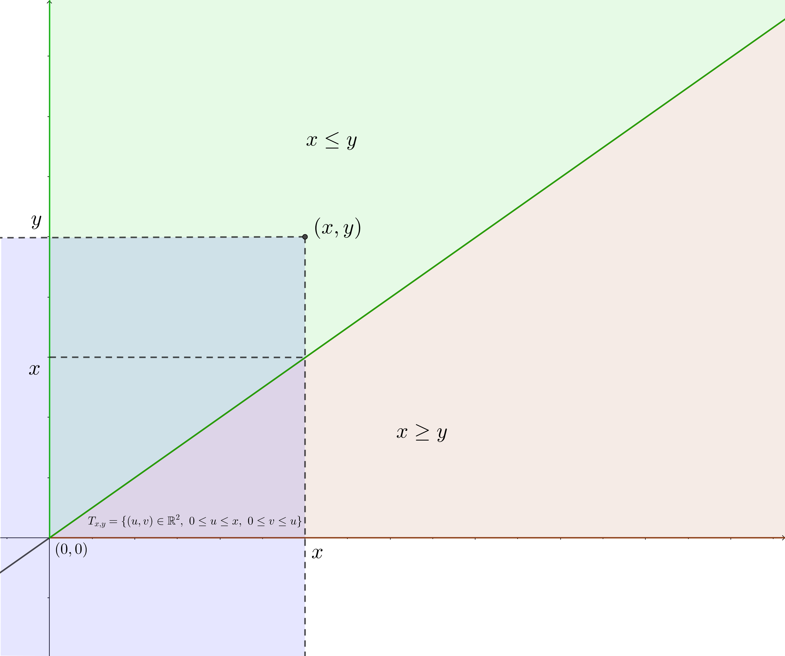
- Caso \(x\geq y\) (zona morada de la figura adjunta). En este caso, si hacemos la intersección de la región \(B=(-\infty,x]\times (-\infty,y]\) (zona azul) con la zona morada o región donde \(f_{XY}(x,y)\neq 0\) obtenemos el trapecio \(T_{x,y}=\{(u,v)\in\mathbb{R}^2,\ 0\leq v\leq y,\ v\leq u\leq x\}.\) Ver figura adjunta.
Por tanto, \[ \begin{array}{rl} F_{XY}(x,y) & =\int_{v=0}^{v=y}\int_{u=v}^{u=x} f_{XY}(u,v)\,dv\,du= 2 \int_{v=0}^{v=y} \mathrm{e}^{-v}\int_{u=v}^{u=x} \mathrm{e}^{-u}\,du\,dv = 2 \int_{v=0}^{v=y} \mathrm{e}^{-v}\left[-\mathrm{e}^{-u}\right]_{u=v}^{u=x}\, dv \\ & = 2 \int_{v=0}^{v=y} \mathrm{e}^{-v} (\mathrm{e}^{-v}-\mathrm{e}^{-x})\, du =2 \int_{v=0}^{v=y} \left(\mathrm{e}^{-2v}-\mathrm{e}^{-v-x}\right)\, du=2 \left[-\frac{1}{2}\mathrm{e}^{-2v}+\mathrm{e}^{-v-x}\right]_{v=0}^{v=y} \\ & = 2\left(-\frac{1}{2}\mathrm{e}^{-2y}+\mathrm{e}^{-x-y}+\frac{1}{2}-\mathrm{e}^{-x}\right) =1-2\mathrm{e}^{-x}-\mathrm{e}^{-2y}+2\mathrm{e}^{-x-y}. \end{array} \]
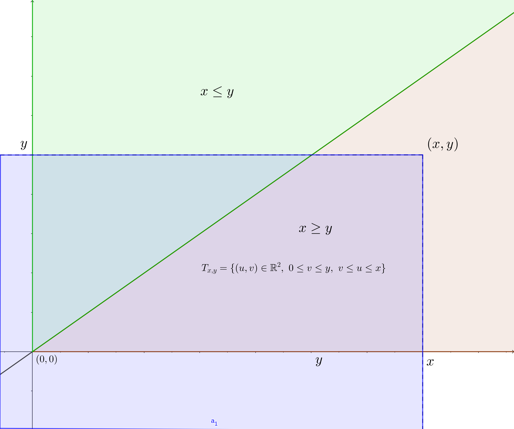
En resumen: \[ F_{XY}(x,y)=\begin{cases} 1-2\mathrm{e}^{-x}+\mathrm{e}^{-2x}, & \mbox{si }x\geq 0,\ y\geq 0,\ x\leq y,\\ 1-2\mathrm{e}^{-x}-\mathrm{e}^{-2y}+2\mathrm{e}^{-x-y}, & \mbox{si }x\geq 0,\ y\geq 0,\ x\geq y,\\ 0, & \mbox{en caso contrario.} \end{cases} \]
Comprobemos a continuación que si derivamos dos veces la expresión de \(F_{XY}\), primero respecto \(x\) y después respecto \(y\), obtendremos la función de densidad \(f_{XY}\).
Si derivamos respecto \(x\) obtenemos: \[ \frac{\partial F_{XY}(x,y)}{\partial x}=\begin{cases} 2\mathrm{e}^{-x}-2\mathrm{e}^{-2x}, & \mbox{si }x\geq 0,\ y\geq 0,\ x\leq y,\\ 2\mathrm{e}^{-x}-2\mathrm{e}^{-x-y}, & \mbox{si }x\geq 0,\ y\geq 0,\ x\geq y,\\ 0, & \mbox{en caso contrario.} \end{cases} \] Si ahora derivamos respecto \(y\) obtenemos: \[ \frac{\partial^2 F_{XY}(x,y)}{\partial y\partial x}=\begin{cases} 0, & \mbox{si }x\geq 0,\ y\geq 0,\ x\leq y,\\ 2\mathrm{e}^{-x-y}, & \mbox{si }x\geq 0,\ y\geq 0,\ x\geq y,\\ 0, & \mbox{en caso contrario.} \end{cases} \] expresión que coincide con la función de densidad \(f_{XY}(x,y)\).
Hallemos las funciones de densidad marginales. Fijémonos que basta tener en cuenta los casos en que \(x\geq 0\) e \(y\geq 0\) ya que en caso contrario tanto \(f_X(x)\) como \(f_Y(y)\) serán nulas.
\[ \begin{array}{rl} f_X(x) & = \int_{-\infty}^{\infty} f_{XY}(x,y)\, dy =\int_{y=0}^{y=x}2\mathrm{e}^{-x-y}\, dy = 2\left[-\mathrm{e}^{-x-y}\right]_{y=0}^{y=x} = 2\left(\mathrm{e}^{-x}-\mathrm{e}^{-2x}\right),\mbox{ si }x\geq 0, \\ f_Y(y) & = \int_{-\infty}^{\infty} f_{XY}(x,y)\, dx =\int_{x=y}^{x=\infty}2\mathrm{e}^{-x-y}\, dx = 2\left[-\mathrm{e}^{-x-y}\right]_{x=y}^{x=\infty} = 2\mathrm{e}^{-2y}, \mbox{ si }y\geq 0. \end{array} \] Vemos que la variable \(Y\) corresponde a una distribución exponencial de parámetro \(\lambda =2\).
Dibujemos la función de densidad conjunta y la función de distribución conjunta con R. Primero las definimos:
fun.den.con = function(x,y){ifelse(x>=0 & y>=0 & x>=y,
2*exp(-x-y),0)}
fun.dist.con = function(x,y){ifelse(x>=0 & y>=0 & x<=y,
1-2*exp(-x)+exp(-2*x),ifelse(x>=0 & y>=0 & x>=y,
1-2*exp(-x)-exp(-2*y)+2*exp(-x-y),0))}A continuación las dibujamos para \(x\) e \(y\) entre \(-1\) y \(4\):
x=seq(from=-1,to=4,by=0.1)
y=seq(from=-1,to=4,by=0.1)
z.fun.den.con=outer(x,y,fun.den.con)
z.fun.dist.con = outer(x,y,fun.dist.con)
persp(x,y,z.fun.den.con,theta=50,phi=40,col="green",shade=0.25,ticktype="detailed")
5.4.3 La distribución gaussiana bidimensional
Vamos a generalizar la distribución normal a dos dimensiones.
Propiedades de la función de densidad de la variable gaussiana bidimensional:
Para cualquier punto \((x,y)\in\mathbb{R}^2\), la función de densidad es no nula: \(f_{XY}(x,y)>0\).
La función de densidad tiene un único máximo absoluto en el punto \((0,0)\) que vale \(f_{XY}(0,0)=\frac{1}{2\pi\sqrt{1-\rho^2}}.\) Por tanto, para \(\rho=0\), dicho máximo alcanza el mínimo valor posible y si \(\rho\to \pm 1\), dicho máximo tiende a \(\infty\).
Las densidades marginales \(f_X(x)\) y \(f_Y(y)\) son normales \(N(0,1)\).
Veámoslo con \(f_X(x)\). Por simetría, quedaría deducido para \(f_Y(y)\): \[ \begin{array}{rl} f_X(x) & =\frac{1}{2\pi\sqrt{1-\rho^2}}\int_{-\infty}^\infty \mathrm{e}^{-\frac{(x^2-2\rho xy+y^2)}{2(1-\rho^2)}}\, dy = \frac{1}{2\pi\sqrt{1-\rho^2}}\mathrm{e}^{-\frac{x^2}{2(1-\rho^2)}}\int_{-\infty}^\infty \mathrm{e}^{-\frac{(-2\rho xy+y^2)}{2(1-\rho^2)}}\, dy \\ & = \frac{1}{2\pi\sqrt{1-\rho^2}}\mathrm{e}^{-\frac{x^2}{2(1-\rho^2)}} \int_{-\infty}^\infty \mathrm{e}^{-\frac{(y-\rho x)^2}{2(1-\rho^2)}} \mathrm{e}^{\frac{\rho^2 x^2}{2(1-\rho^2)}}\, dy \\ & =\frac{1}{2\pi\sqrt{1-\rho^2}}\mathrm{e}^{-\frac{x^2}{2}} \int_{-\infty}^\infty \mathrm{e}^{-\frac{(y-\rho x)^2}{2(1-\rho^2)}}\, dy, \mbox{ hacemos cambio $z=\frac{y-\rho x}{\sqrt{1-\rho^2}}$}\\ & = \frac{1}{2\pi\sqrt{1-\rho^2}}\mathrm{e}^{-\frac{x^2}{2}} \int_{-\infty}^\infty \mathrm{e}^{-\frac{z^2}{2}}\sqrt{1-\rho^2}\, dy =\frac{1}{\sqrt{2\pi}}\mathrm{e}^{-\frac{x^2}{2}}, \end{array} \] función que coincide con la función de densidad de la variable \(N(0,1)\).
En el último paso hemos usado que \[ \frac{1}{\sqrt{2\pi}}\int_{-\infty}^\infty \mathrm{e}^{-\frac{z^2}{2}}\, dz=1, \] ya que correspondería al área de una función de densidad de una distribución \(N(0,1)\).
5.4.3.1 La distribución gaussiana bidimensional en R
En R existe el paquete bivariate para trabajar con algunas distribuciones conjuntas; en particular, con la distribución normal bidimensional.
La función que nos la densidad de la distribución normal bidimensional es nbvpdf y tiene 5 parámetros: la media de \(X\) (\(\mu_X\)), la media de \(Y\) (\(\mu_Y\)), la desviación típica de \(X\) (\(\sigma_X\)), la desviación típica de \(Y\) (\(\sigma_Y\)) y un concepto que veremos más adelante, la correlación entre \(X\) e \(Y\) (\(\rho_{XY}\)).
En el ejemplo que estamos tratando, los valores de los parámetros anteriores son: \(\mu_X=\mu_Y=0\), \(\sigma_X=\sigma_Y=1\) y \(\rho_{XY}=\rho.\)
Vamos a hacer un gráfico de la distribución normal bidimensional para \(\rho=\frac{1}{2}.\)

5.5 Independencia de variables aleatorias
5.5.1 Independencia de variables aleatorias discretas
Recordemos que dos sucesos \(A\) y \(B\) son independientes si \(P(A\cap B)=P(A)\cdot P(B)\).
¿Cómo trasladar dicho concepto al caso de variables aleatorias?
En el caso de variables aleatorias discretas bidimensionales vimos que, dada una variable aleatoria bidimensional discreta \((X,Y)\) con \((X,Y)(\Omega)=\{(x_i,y_j),\ i=1,2,\ldots,j=1,2,\ldots\}\), los sucesos de la forma \(\{X=x_i,\ Y=y_j\}\) determinaban cómo se distribuían los valores de la variable \((X,Y)\). De ahí la definición siguiente:
5.5.1.1 Ejemplo
Ejemplo de la suma y el producto de los resultados de dos lanzamientos de un dado
Consideramos la variable aleatoria \((S,P)\) donde \(S\) representa la suma de los valores obtenidos al lanzar dos veces un dado y \(P\), su producto.
En este caso \(S\) y \(P\) no son independientes ya que recordemos que por ejemplo \(P_{SP}(3,2)=\frac{2}{36}\), \(P_S(3)=\frac{2}{36}\) y \(P_P(2)=\frac{2}{36}\), ya que en este último caso, sólo hay dos posibles resultados en los que el producto dé 2: el \((1,2)\) y el \((2,1)\).
Entonces no se cumple que \(P_{SP}(3,2)=P_S(3)\cdot P_P(2)\), ya que \(\frac{2}{36}\neq \frac{2}{36}\cdot \frac{2}{36}\).
De ahí que no sean independientes ya que la condición anterior se debería cumplir para todos los valores \(x_i\) e \(y_k\) y hemos encontrado un contraejemplo en donde no se cumple.
Ejemplo
Veamos un caso de independencia.
Consideramos el experimento aleatorio de lanzar un dado dos veces. Sea \(X\) el resultado del primer lanzamiento e \(Y\), el resultado del segundo lanzamiento.
Veamos que, en este caso, \(X\) e \(Y\) son independientes.
El valor de \((X,Y)(\Omega)=\{(1,1),(1,2),\ldots,(6,6)\}\), en total 36 resultados.
La función de probabilidad conjunta en un valor cualquiera \((i,j)\) con \(i,j\in\{1,2,3,4,5,6\}\) será: \(P_{XY}(i,j)=\frac{1}{36}\) ya que la probabilidad que salga \(i\) en el primer lanzamiento es \(\frac{1}{6}\) y la probabilidad de que salga \(j\) en el segundo lanzamiento, también. Por tanto, la probabilidad de que salga \(i\) en el primer lanzamiento y \(j\) en el segundo será: \(\frac{1}{6}\cdot \frac{1}{6}=\frac{1}{36}.\)
Las funciones de densidad marginales de \(X\) e \(Y\) serán:| \(X\) o \(Y\) | 1 | 2 | 3 | 4 | 5 | 6 |
|---|---|---|---|---|---|---|
| \(P_X\) o \(P_Y\) | \(\frac{1}{6}\) | \(\frac{1}{6}\) | \(\frac{1}{6}\) | \(\frac{1}{6}\) | \(\frac{1}{6}\) | \(\frac{1}{6}\) |
Por tanto, para todo \((i,j)\) con \(i,j\in\{1,2,3,4,5,6\}\) se cumplirá: \[ P_{XY}(i,j)=\frac{1}{36}=\frac{1}{6}\cdot \frac{1}{6}=P_X(i)\cdot P_Y(j). \] Deducimos que son independientes.
Para comprobar si dos variables aleatorias \(X\) e \(Y\) son independientes o no en R en general, una vez calculada la tabla de la función de probabilidad, podemos calcular la tabla de independencia teórica \(P_T(x_i,y_j)\) y compararlas. Ésta segunda tabla se define de la forma siguiente:
\[
P_T(x_i,y_j)=P_X(x_i)\cdot P_Y(y_j),
\]
donde \(P_X\) y \(P_Y\) son las distribuciones marginales.
La tabla de independencia teórica en el caso de la suma y el producto se calcularían de la forma siguiente:
tabla.ind.teor = marginal.suma%*%t(marginal.producto)
tabla.ind.teor = as.data.frame(tabla.ind.teor)
rownames(tabla.ind.teor)=rownames(tabla.func.prob.conjunta)
colnames(tabla.ind.teor)=colnames(tabla.func.prob.conjunta)Si comparáis los resultados de la tabla de independencia teórica mostrada en las transparencias siguientes con los resultados de la tabla de la función de probabilidad conjunta, veréis que no son iguales. Por tanto, \(S\) y \(P\) no son independientes.
| 1 | 2 | 3 | 4 | 5 | 6 | 8 | 9 | 10 | |
|---|---|---|---|---|---|---|---|---|---|
| 2 | 0.0008 | 0.0015 | 0.0015 | 0.0023 | 0.0015 | 0.0031 | 0.0015 | 0.0008 | 0.0015 |
| 3 | 0.0015 | 0.0031 | 0.0031 | 0.0046 | 0.0031 | 0.0062 | 0.0031 | 0.0015 | 0.0031 |
| 4 | 0.0023 | 0.0046 | 0.0046 | 0.0069 | 0.0046 | 0.0093 | 0.0046 | 0.0023 | 0.0046 |
| 5 | 0.0031 | 0.0062 | 0.0062 | 0.0093 | 0.0062 | 0.0123 | 0.0062 | 0.0031 | 0.0062 |
| 6 | 0.0039 | 0.0077 | 0.0077 | 0.0116 | 0.0077 | 0.0154 | 0.0077 | 0.0039 | 0.0077 |
| 7 | 0.0046 | 0.0093 | 0.0093 | 0.0139 | 0.0093 | 0.0185 | 0.0093 | 0.0046 | 0.0093 |
| 12 | 15 | 16 | 18 | 20 | 24 | 25 | 30 | 36 | |
|---|---|---|---|---|---|---|---|---|---|
| 2 | 0.0031 | 0.0015 | 0.0008 | 0.0015 | 0.0015 | 0.0015 | 0.0008 | 0.0015 | 0.0008 |
| 3 | 0.0062 | 0.0031 | 0.0015 | 0.0031 | 0.0031 | 0.0031 | 0.0015 | 0.0031 | 0.0015 |
| 4 | 0.0093 | 0.0046 | 0.0023 | 0.0046 | 0.0046 | 0.0046 | 0.0023 | 0.0046 | 0.0023 |
| 5 | 0.0123 | 0.0062 | 0.0031 | 0.0062 | 0.0062 | 0.0062 | 0.0031 | 0.0062 | 0.0031 |
| 6 | 0.0154 | 0.0077 | 0.0039 | 0.0077 | 0.0077 | 0.0077 | 0.0039 | 0.0077 | 0.0039 |
| 7 | 0.0185 | 0.0093 | 0.0046 | 0.0093 | 0.0093 | 0.0093 | 0.0046 | 0.0093 | 0.0046 |
| 1 | 2 | 3 | 4 | 5 | 6 | 8 | 9 | 10 | |
|---|---|---|---|---|---|---|---|---|---|
| 8 | 0.0039 | 0.0077 | 0.0077 | 0.0116 | 0.0077 | 0.0154 | 0.0077 | 0.0039 | 0.0077 |
| 9 | 0.0031 | 0.0062 | 0.0062 | 0.0093 | 0.0062 | 0.0123 | 0.0062 | 0.0031 | 0.0062 |
| 10 | 0.0023 | 0.0046 | 0.0046 | 0.0069 | 0.0046 | 0.0093 | 0.0046 | 0.0023 | 0.0046 |
| 11 | 0.0015 | 0.0031 | 0.0031 | 0.0046 | 0.0031 | 0.0062 | 0.0031 | 0.0015 | 0.0031 |
| 12 | 0.0008 | 0.0015 | 0.0015 | 0.0023 | 0.0015 | 0.0031 | 0.0015 | 0.0008 | 0.0015 |
| 12 | 15 | 16 | 18 | 20 | 24 | 25 | 30 | 36 | |
|---|---|---|---|---|---|---|---|---|---|
| 8 | 0.0154 | 0.0077 | 0.0039 | 0.0077 | 0.0077 | 0.0077 | 0.0039 | 0.0077 | 0.0039 |
| 9 | 0.0123 | 0.0062 | 0.0031 | 0.0062 | 0.0062 | 0.0062 | 0.0031 | 0.0062 | 0.0031 |
| 10 | 0.0093 | 0.0046 | 0.0023 | 0.0046 | 0.0046 | 0.0046 | 0.0023 | 0.0046 | 0.0023 |
| 11 | 0.0062 | 0.0031 | 0.0015 | 0.0031 | 0.0031 | 0.0031 | 0.0015 | 0.0031 | 0.0015 |
| 12 | 0.0031 | 0.0015 | 0.0008 | 0.0015 | 0.0015 | 0.0015 | 0.0008 | 0.0015 | 0.0008 |
lo cual finaliza nuestros cálculos en R.
5.5.2 Independencia de variables aleatorias continuas
La definición dada para variables aleatorias discretas se traslada de forma natural a las variables aleatorias continuas:
5.5.2.1 Ejemplos
Ejemplo
Recordemos el ejemplo siguiente visto donde teníamos una variable aleatoria bidimensional continua \((X,Y)\) con función de densidad conjunta: \[ f_{XY}(x,y)=\begin{cases} 1, & \mbox{ si }0\leq x\leq 1,\ 0\leq y\leq 1, \\ 0, & \mbox{en caso contrario.} \end{cases} \] y con densidad marginales: \[ f_{X}(x)=\begin{cases} 1, & \mbox{ si }0\leq x\leq 1,\\ 0, & \mbox{en caso contrario.} \end{cases}\quad f_{Y}(y)=\begin{cases} 1, & \mbox{ si }0\leq y\leq 1,\\ 0, & \mbox{en caso contrario.} \end{cases} \]
Veamos que son independientes.
Consideremos dos casos:
\((x,y)\in [0,1]\times [0,1]\). En este caso: \[ f_{XY}(x,y) =1 =1\cdot 1=f_X(x)\cdot f_Y(y). \]
- \((x,y)\not\in [0,1]\times [0,1]\). En este caso: \[ f_{XY}(x,y) =0 = f_X(x)\cdot f_Y(y), \] ya que si \((x,y)\not\in [0,1]\times [0,1]\), o \(x\not\in [0,1]\) o \(y\not\in [0,1]\). Por tanto \(f_X(x)=0\) o \(f_Y(y)=0\). En cualquier caso, \(f_X(x)\cdot f_Y(y)=0\).
Ejemplo
Recordemos el ejemplo siguiente visto donde teníamos una variable aleatoria bidimensional continua \((X,Y)\) con función de densidad conjunta: \[ f_{XY}(x,y)=\begin{cases} 2 \mathrm{e}^{-x}\mathrm{e}^{-y}, & 0\leq y\leq x < \infty,\\ 0, & \mbox{ en caso contrario,} \end{cases} \] y con densidad marginales: \[ f_X(x) = 2\left(\mathrm{e}^{-x}-\mathrm{e}^{-2x}\right),\mbox{ si }x\geq 0, \quad f_Y(y) = 2\mathrm{e}^{-2y}, \mbox{ si }y\geq 0. \] En este caso no son independientes ya que claramente \(f_{XY}(x,y)\neq f_X(x)\cdot f_Y(y)\).
En este caso, recordemos que la función de densidad conjunta de \((X,Y)\) es: \[ f_{XY}(x,y)=\frac{1}{2\pi\sqrt{1-\rho^2}}\mathrm{e}^{-\frac{(x^2-2\rho xy+y^2)}{2(1-\rho^2)}},\ -\infty <x,y<\infty. \] Las funciones de densidad marginales de \(X\) e \(Y\) correspondían a \(N(0,1)\): \[ \begin{array}{rl} f_X(x) & =\frac{1}{\sqrt{2\pi}}\mathrm{e}^{-\frac{x^2}{2}},\ -\infty <x<\infty,\\ f_Y(y) & =\frac{1}{\sqrt{2\pi}}\mathrm{e}^{-\frac{y^2}{2}},\ -\infty <y<\infty. \end{array} \]
¿Para qué valor(es) de \(\rho\) las variables normales estándar \(X\) e \(Y\) serían independientes?
o, ¿para qué valor(es) de \(\rho\) se cumple? \[ f_X(x)\cdot f_Y(y)=\frac{1}{2\pi}\mathrm{e}^{-\frac{x^2+y^2}{2}} = \frac{1}{2\pi\sqrt{1-\rho^2}}\mathrm{e}^{-\frac{(x^2-2\rho xy+y^2)}{2(1-\rho^2)}}. \] La respuesta es claramente para \(\rho=0\).
Por tanto, \(\rho\) se puede interpretar como un parámetro de independencia, cuánto más cercano a cero esté, más cerca de la independencia estarán las variables \(X\) e \(Y\).
5.5.3 Relación de la independencia y la función de distribución
El siguiente resultado nos da la relación entre la independencia de variables aleatorias y su función de distribución conjunta:
Ejemplo
Consideramos el experimento aleatorio de lanzar un dado dos veces. Sea \(X\) el resultado del primer lanzamiento e \(Y\), el resultado del segundo lanzamiento.
Recordemos que, en este caso, \(X\) e \(Y\) son independientes.
En primer lugar notemos que si \(x<1\) o \(y<1\), \(F_{XY}(x,y)=0\) ya que el suceso \(\{X\leq x,\ Y\leq y\}\) es vacío.
De la misma forma como \(x<1\) o \(y<1\), o el suceso \(\{X\leq x\}\) o el suceso \(\{Y\leq y\}\) son vacíos. Por tanto, o \(F_X(x)=0\) o \(F_Y(y)=0\).
En cualquier caso, se cumple \(F_{XY}(x,y)=0=F_X(x)\cdot F_Y(y)\).
Podemos suponer, por tanto, que \(x\geq 1\) e \(y\geq 1\).
Sea \((x,y)\in \mathbb{R}^2\) con \(x\geq 1\) e \(y\geq 1\). Podemos suponer tal que existen dos valores \(i\) y \(j\) en \(\{1,2,\ldots\}\) con \(i\leq x < i+1\) y \(j\leq y <j+1\).
El valor de la función de distribución conjunta en \((x,y)\) será: \[ F_{XY}(x,y)=\begin{cases} \frac{i\cdot j}{36}, & \mbox{si }i\leq 6, \ j\leq 6, \\ \frac{6 i}{36}, & \mbox{si }i\leq 6,\ j\geq 6,\\ \frac{6 j}{36}, & \mbox{si }i\geq 6,\ j\leq 6,\\ 1, & \mbox{ si }i\geq 6,\ j\geq 6, \end{cases} \]
ya que: \[ \begin{array}{rl} F_{XY}(x,y) & =P(X\leq i,\ Y\leq j)=P(\{(k,l)\in \{1,2,3,4,5,6\}^2,\ |\ k\leq i,\ l\leq j\})\\ & =P(\{(1,1),\ldots,(1,j),\ldots,(i,1),\ldots,(i,j)\})=\begin{cases} \frac{i\cdot j}{36}, & \mbox{si }i\leq 6, \ j\leq 6, \\ \frac{6 i}{36}, & \mbox{si }i\leq 6,\ j\geq 6,\\ \frac{6 j}{36}, & \mbox{si }i\geq 6,\ j\leq 6,\\ 1, & \mbox{ si }i\geq 6,\ j\geq 6, \end{cases}, \end{array} \] ya que claramente el cardinal del conjunto \(\{(1,1),\ldots,(1,j),\ldots,(i,1),\ldots,(i,j)\}\) es \(\begin{cases} i\cdot j, & \mbox{si }i\leq 6, \ j\leq 6, \\ 6 i, & \mbox{si }i\leq 6,\ j\geq 6,\\ 6 j, & \mbox{si }i\geq 6,\ j\leq 6,\\ 36, & \mbox{ si }i\geq 6,\ j\geq 6. \end{cases}\).
Hallemos ahora la función de distribución de \(X\) e \(Y\) que consiste en el resultado del lanzamiento de un dado.
Dado \(x\in\mathbb{R}\) con \(x\geq 1\), existe un \(i\) con \(i\in\{1,2,\ldots,\}\) con \(i\leq x <i+1\). En este caso, el valor de \(F_X(x)\) es: \[ F_X(x)=\begin{cases} \frac{i}{6}, &\mbox{si }i\leq 6,\\ 1, & \mbox{si }i\geq 6, \end{cases} \] ya que: \[ F_X(x)=F_X(i)=P(X\leq i)=P(\{k\in\{1,2,3,4,5,6\},\ |\ k\leq i\})=\begin{cases} \frac{i}{6}, &\mbox{si }i\leq 6,\\ 1, & \mbox{si }i\geq 6, \end{cases}, \] ya que el cardinal del conjunto \(\{k\in\{1,2,3,4,5,6\},\ |\ k\leq i\}\) es \(\begin{cases} i, &\mbox{si }i\leq 6,\\ 6, & \mbox{si }i\geq 6. \end{cases}\)
La función de distribución de \(Y\) es de la misma forma.
Por último, comprobemos que se verifica que \(F_{XY}(x,y)=F_X(x)\cdot F_Y(y)\), si \(x\geq 1\) e \(y\geq 1\).
Sea \((x,y)\in\mathbb{R}^2\) y sean los enteros \(i\) y \(j\) tales que \(i\leq x<i+1\) y \(j\leq y<j+1\). Consideremos 4 casos:
\(i\leq 6, \ j\leq 6\). En este caso: \[ F_{XY}(x,y)=\frac{i\cdot j}{36}=\frac{i}{6}\cdot \frac{j}{6}=F_X(x)\cdot F_Y(y). \]
\(i\leq 6,\ j\geq 6\). En este caso: \[ F_{XY}(x,y)=\frac{6i}{36}=\frac{i}{6}\cdot 1=F_X(x)\cdot F_Y(y). \]
\(i\geq 6,\ j\leq 6\). En este caso: \[ F_{XY}(x,y)=\frac{6j}{36}=1\cdot \frac{j}{6}=F_X(x)\cdot F_Y(y). \]
\(i\geq 6,\ j\geq 6\). En este caso: \[ F_{XY}(x,y)=1=1\cdot 1=F_X(x)\cdot F_Y(y). \]
En resumen, para todo \((x,y)\in \mathbb{R}^2\) se verifica que \(F_{XY}(x,y)=F_X(x)\cdot F_Y(y)\), tal como queríamos ver.
Ejemplo
Recordemos la variable aleatoria bidimensional continua con función de densidad conjunta: \[ f_{XY}(x,y)=\begin{cases} 1, & \mbox{ si }0\leq x\leq 1,\ 0\leq y\leq 1, \\ 0, & \mbox{en caso contrario.} \end{cases} \] Su función de distribución conjunta es: \[ F_{XY}(x,y)=\begin{cases} 0, & \mbox{si }x<0,\mbox{ o }y<0,\\ xy, & \mbox{si }0\leq x\leq 1,\ 0\leq y\leq 1, \\ x, & \mbox{si }0\leq x\leq 1,\ y> 1, \\ y, & \mbox{si }0\leq y\leq 1,\ x> 1, \\ 1, & x\geq 1,\ y\geq 1. \end{cases} \]
Recordemos también que las distribuciones marginales de \(X\) e \(Y\) eran uniformes en el intervalo \([0,1]\). Por tanto, las funciones de distribución marginales serán: \[ F_X(x)=\begin{cases} 0, & \mbox{si }x\leq 0, \\ x, & \mbox{si }0\leq x\leq 1, \\ 1, & \mbox{si }x\geq 1. \\ \end{cases},\quad F_Y(y)=\begin{cases} 0, & \mbox{si }y\leq 0, \\ y, & \mbox{si }0\leq y\leq 1, \\ 1, & \mbox{si }y\geq 1. \\ \end{cases} \] Recordemos que \(X\) e \(Y\) son independientes. Verifiquemos que \(F_{XY}(x,y)=F_X(x)\cdot F_Y(y)\).
Distinguiremos cinco casos:
\(x<0\) o \(y<0\). En este caso, \(F_{XY}(x,y)=0\) y, o \(F_X(x)=0\), si \(x<0\), o \(F_Y(y)=0\), si \(y<0\). En cualquier caso, se cumple que \(F_{XY}(x,y)=F_X(x)\cdot F_Y(y)\).
\(0\leq x\leq 1,\ 0\leq y\leq 1\). En este caso, \(F_{XY}(x,y)=xy\), \(F_X(x)=x\) y \(F_Y(y)=y\). Claramente, se cumple que \(F_{XY}(x,y)=F_X(x)\cdot F_Y(y)\).
\(0\leq x\leq 1,\ y> 1\). En este caso, \(F_{XY}(x,y)=x\), \(F_X(x)=x\) y \(F_Y(y)=1\). Claramente, se cumple que \(F_{XY}(x,y)=F_X(x)\cdot F_Y(y)\).
\(x >1,\ 0\leq y\leq 1\). En este caso, \(F_{XY}(x,y)=y\), \(F_X(x)=1\) y \(F_Y(y)=y\). Claramente, se cumple que \(F_{XY}(x,y)=F_X(x)\cdot F_Y(y)\).
\(x\geq 1,\ y\geq 1\). En este caso, \(F_{XY}(x,y)=1\), \(F_X(x)=1\) y \(F_Y(y)=1\). Claramente, se cumple que \(F_{XY}(x,y)=F_X(x)\cdot F_Y(y)\).
5.6 Momentos conjuntos y valores esperados conjuntos
El valor esperado de una variable aleatoria \(X\) se identifica con el centro de masa de la distribución de \(X\).
La varianza proporciona una medida de la extensión de la distribución.
En el caso de dos variables aleatorias, estamos interesados en cómo \(X\) e \(Y\) varían juntas.
En particular, nos interesa saber si la variación de \(X\) e \(Y\) está correlacionada. Por ejemplo, si \(X\) aumenta, ¿Y tiende a aumentar o disminuir?
Los momentos conjuntos de \(X\) e \(Y\), que se definen como valores esperados de las funciones de \(X\) e \(Y\), proporcionan esta información.
5.6.1 Valor esperado de una función de dos variables aleatorias
Sea \((X,Y)\) una variable aleatoria bidimensional.
Sea \(P_{XY}\) su función de probabilidad conjunta en el caso en que \((X,Y)\) sea discreta y \(f_{XY}\) su función de densidad conjunta en el caso en que \((X,Y)\) sea continua.
Sea \(Z=g(X,Y)\) una variable aleatoria unidimensional función de las variables \(X\) e \(Y\). Por ejemplo:
- Suma de las dos variables \(g(x,y)=x+y\): \(Z=X+Y\).
- Producto de las dos variables \(g(x,y)=x\cdot y\): \(Z=X\cdot Y\).
- Suma de los cuadrados de las variables \(g(x,y)=x^2+y^2\): \(Z=X^2+Y^2\).
Hay que tener en cuenta que \(Z\), como variable aleatoria unidimensional tiene una función de probabilidad \(P_Z\) en el caso en que \((X,Y)\) sea discreta y una función de densidad \(f_Z\) en el caso en que \((X,Y)\) sea continua.
El siguiente resultado nos dice cómo calcular el valor esperado de \(Z\) sin tener que calcular \(P_Z\) o \(f_Z\), sólo usando la información de la variable aleatoria conjunta \((X,Y)\):
en el caso en que \((X,Y)\) sea discreta con \((X,Y)(\Omega)=\{(x_i,y_j),\ i=1,2,\ldots, j=1,2,\ldots\}\), \[ E(Z) = E(g(X,Y)) =\sum_{x_i}\sum_{y_j}g(x_i,y_j)P(x_i,y_j), \]
en el caso en que \((X,Y)\) sea continua: \[ E(Z)=E(g(X,Y))=\int_{-\infty}^\infty \int_{-\infty}^\infty g(x,y)f_{XY}(x,y)\, dx\, dy. \]
5.6.1.1 Ejemplos
Ejemplo
Consideremos el ejemplo de la variable \((S,P)\) que nos daba la suma y el producto de los resultados cuando lanzábamos dos veces un dado.
Vamos a calcular \(E(S+P)\).
Recordemos que ya hemos calculado \(P_{SP}\). La expresión de \(E(S+P)\) será: \[ \begin{array}{rll} E(S+P) & = &(2+1)\cdot P_{SP}(2,1)+(3+2)\cdot P_{SP}(3,2)+(4+3)\cdot P_{SP}(4,3)+(4+4)\cdot P_{SP}(4,4)\\ & & + (5+4)\cdot P_{SP}(5,4)+(5+6)\cdot P_{SP}(5,6)+(6+5)\cdot P_{SP}(6,5)+(6+8)\cdot P_{SP}(6,8)\\ & & + (6+9)\cdot P_{SP}(6,9)+(7+6)\cdot P_{SP}(7,6)+(7+10)\cdot P_{SP}(7,10)+(7+12)\cdot P_{SP}(7,12)\\ & & + (8+12)\cdot P_{SP}(8,12)+(8+15)\cdot P_{SP}(8,15)+(8+16)\cdot P_{SP}(8,16)\\ & & +(9+18)\cdot P_{SP}(9,18) + (9+20)\cdot P_{SP}(9,20)+(10+24)\cdot P_{SP}(10,24)\\ & & +(10+25)\cdot P_{SP}(10,25)+(11+30)\cdot P_{SP}(11,30) + (12+36)\cdot P_{SP}(12,36) \\ & = & 3\cdot \frac{1}{36}+5\cdot\frac{2}{36}+7\cdot \frac{2}{36}+8\cdot \frac{1}{36}+9\cdot \frac{2}{36}+11\cdot\frac{2}{36}+11\cdot \frac{2}{36}+14\cdot\frac{2}{36}+15\cdot\frac{1}{36}\\ & & + 13\cdot\frac{2}{36}+17\cdot\frac{2}{36}+19\cdot\frac{2}{36}+20\cdot\frac{2}{36}+23\cdot\frac{2}{36}+24\cdot\frac{1}{36}+27\cdot\frac{2}{36}+29\cdot\frac{2}{36} \\ & & + 34\cdot\frac{2}{36}+35\cdot\frac{1}{36}+41\cdot\frac{2}{36}+48\cdot\frac{1}{36}=\frac{693}{36}= 19.25. \end{array} \]
Hallar el valor esperado de la suma \(E(S+P)\) una vez hallada la tabla de la función de probabilidad conjunta, en R es bastante sencillo usando la función outer:
valores.suma = as.integer(rownames(tabla.func.prob.conjunta))
valores.producto = as.integer(colnames(tabla.func.prob.conjunta))
suma.valores = outer(valores.suma,valores.producto,"+")
(valor.esperado.suma = sum(suma.valores*tabla.func.prob.conjunta))## [1] 19.25R para hallar el valor esperado de una función \(g(X,Y)\), \(E(g(X,Y))\) de las variables aleatorias \(X\) e \(Y\), basta sustituir el valor + en el script anterior por FUN=g, definiendo previamente la función g.
Ejemplo
Recordemos el ejemplo donde \((X,Y)\) era una variable aleatoria bidimensional continua con función de densidad conjunta: \[ f_{XY}(x,y)=\begin{cases} 2 \mathrm{e}^{-x}\mathrm{e}^{-y}, & 0\leq y\leq x < \infty,\\ 0, & \mbox{ en caso contrario.} \end{cases} \] Calculemos \(E(X\cdot Y)\): \[ \begin{array}{ll} E(X\cdot Y) & =\int_{x=0}^{x=\infty} \int_{y=0}^{y=x} 2 x y \mathrm{e}^{-x}\mathrm{e}^{-y}\, dy\, dx=2\int_{x=0}^{x=\infty} x \mathrm{e}^{-x} \int_{y=0}^{y=x} y \mathrm{e}^{-y}\, dy\, dx \\ & = 2\int_{x=0}^{x=\infty}x \mathrm{e}^{-x} \left[-\mathrm{e}^{-y} (y+1)\right]_{y=0}^{y=x}\, dx = 2\int_{x=0}^{x=\infty}x \mathrm{e}^{-x} \left(1-\mathrm{e}^{-x}(x+1)\right)\, dx \\ &= 2\int_{x=0}^{x=\infty}x\left( \mathrm{e}^{-x}-\mathrm{e}^{-2x}\right)-x^2\mathrm{e}^{-2x}\, dx \\ & = 2\left[-\mathrm{e}^{-x}(x+1)+\frac{1}{4}\mathrm{e}^{-2 x}(1+2x)+\frac{1}{4} \mathrm{e}^{-2 x} \left(2 x^2+2 x+1\right)\right]_{x=0}^{x=\infty} = 2\cdot \left(1-\frac{1}{4}-\frac{1}{4}\right)=1. \end{array} \] En el último cálculo hemos usado integración por partes para integrar \(\int x\mathrm{e}^{-x}\,dx\), \(\int x\mathrm{e}^{-2x}\,dx\) y \(\int x^2\mathrm{e}^{-2x}\, dx\).
Ejercicio
Hallar \(E(X+Y)\) para el ejemplo anterior.
5.6.2 Valor esperado de una función de dos variables aleatorias independientes
El siguiente resultado nos simplifica el cálculo del valor esperado de una función de dos variables aleatorias en el caso en que sean independientes:
O sea, el cálculo de \(E(g(X,Y))\) que sería una suma doble en el caso de que \((X,Y)\) sea discreta o una integral doble en el caso en que \((X,Y)\) sea continua se transforma en el producto de dos sumas simples (caso discreto) o el producto de dos integrales simples (caso continuo): \[ \begin{array}{rl} E(Z) & =E(g(X,Y))=\left(\sum_{x_i} g_x(x_i)\cdot P_X(x_i)\right)\cdot \left(\sum_{y_j} g_y(y_j)\cdot P_Y(y_j)\right),\\ &\ \quad \mbox{caso discreto},\\ E(Z) & =E(g(X,Y))=\left(\int_{-\infty}^\infty g_x(x)\cdot f_X(x)\, dx\right)\cdot \left(\int_{-\infty}^\infty g_y(y)\cdot f_Y(y)\right), \\ &\ \quad \mbox{caso continuo}. \end{array} \]
Un caso particular de aplicación de la proposición anterior sería cuando queramos calcular \(E(X\cdot Y)\). En este caso \(g(x,y)=x\cdot y\), \(g_x(x)=x\), y \(g_y(y)=y\).
Podemos escribir, por tanto: \[ E(X\cdot Y)=E_X(X)\cdot E_Y(Y), \] si \(X\) e \(Y\) son independientes.
5.6.2.1 Ejemplos
Ejemplo
Recordemos el experimento aleatorio que consiste en lanzar un dado dos veces. Sea \(X\) el resultado del primer lanzamiento e \(Y\), el resultado del segundo lanzamiento.
Hemos visto que \(X\) e \(Y\) son independientes.
Las marginales de \(X\) e \(Y\) recordemos que son las siguientes:| \(X\) o \(Y\) | 1 | 2 | 3 | 4 | 5 | 6 |
|---|---|---|---|---|---|---|
| \(P_X(i)\) o \(P_Y(i)\) | \(\frac{1}{6}\) | \(\frac{1}{6}\) | \(\frac{1}{6}\) | \(\frac{1}{6}\) | \(\frac{1}{6}\) | \(\frac{1}{6}\) |
Calculemos \(E(X\cdot Y)\) usando la proposición anterior: \[ E(X\cdot Y)=E_X(X)\cdot E_Y(Y)=\left(\sum_{i=1}^6 i\cdot \frac{1}{6}\right)\cdot \left(\sum_{i=1}^6 i\cdot \frac{1}{6}\right)=\left(\frac{21}{6}\right)^2 = 12.25. \] Dejamos como ejercicio el cálculo de \(E(X\cdot Y)\) usando la función de probabilidad conjunta \(P_{XY}\) y comprobar que da el mismo resultado.
Ejemplo
Recordemos la variable aleatoria bidimensional continua con función de densidad conjunta: \[ f_{XY}(x,y)=\begin{cases} 1, & \mbox{ si }0\leq x\leq 1,\ 0\leq y\leq 1, \\ 0, & \mbox{en caso contrario.} \end{cases} \] donde vimos que \(X\) e \(Y\) eran independientes y de distribución uniforme en el intervalo \([0,1]\).
Calculemos \(E(X\cdot Y)\) usando la proposición: \[ E(X\cdot Y)=E_X(X)\cdot E_Y(Y)=\int_0^1 x\cdot 1\, dx\cdot \int_0^1 y\cdot 1\, dy =\left.\frac{x^2}{2}\right]_{x=0}^{x=1}\cdot \left.\frac{y^2}{2}\right]_{y=0}^{y=1}=\frac{1}{2}\cdot \frac{1}{2}=\frac{1}{4}. \] Dejamos como ejercicio el cálculo de \(E(X\cdot Y)\) usando la función de densidad conjunta \(f_{XY}\) y comprobar que da el mismo resultado.
5.6.3 Momentos conjuntos
A continuación vamos a definir el momento de orden \((k,l)\) para una variable aleatoria bidimensional \((X,Y)\) para intentar obtener información de su comportamiento conjunto:
De la misma forma, considerando \(k=0\), los momentos conjuntos de orden \((0,l)\) coinciden con los momentos de orden \(l\) de la variable aleatoria \(Y\).
Para \(l=1\) y \(k=1\) obtenemos el momento de orden \((1,1)\) ya visto anteriormente: \(E(X\cdot Y)\), denominado correlación entre las variables \(X\) e \(Y\). Si dicha correlación es nula, \(E(X\cdot Y)=0\), se dice que las variables \(X\) e \(Y\) son ortogonales.
5.6.4 Momentos conjuntos centrados en las medias
A continuación definamos los momentos conjuntos centrados en las medias:
5.6.5 Covariancia entre las variables
El momento conjunto centrado en las medias para \(k=1\) y \(l=1\) se denomina covariancia entre las variables \(X\) e \(Y\): \[ \mathrm{Cov}(X,Y)=E((X-\mu_X)(Y-\mu_Y)). \] La covariancia puede calcularse a partir de la correlación entre las variables: \[ \mathrm{Cov}(X,Y)=E((X-\mu_X)(Y-\mu_Y))=E(X\cdot Y)-\mu_X\cdot \mu_Y, \]
ya que, usando las propiedades de la esperanza, tenemos: \[ \begin{array}{rl} E((X-\mu_X)(Y-\mu_Y)) & =E(X\cdot Y-\mu_Y X-\mu_X Y+\mu_X\cdot \mu_Y)\\ & =E(X\cdot Y)-\mu_YE(X)-\mu_X E(Y)+\mu_X\cdot \mu_Y \\ & = E(X\cdot Y)-\mu_Y\cdot \mu_X-\mu_X \cdot \mu_Y+\mu_X\cdot \mu_Y \\ & = E(X\cdot Y)-\mu_X\cdot \mu_Y. \end{array} \]
La covarianza es una medida de lo relacionadas están las variables \(X\) e \(Y\):
Si cuando \(X\geq \mu_X\), también ocurre que \(Y\geq \mu_Y\) o viceversa, cuando \(X\leq \mu_X\), también ocurre que \(Y\leq \mu_Y\), el valor \((X-\mu_X)(Y-\mu_Y)\) será positivo y la covarianza será positiva.
Si por el contrario, cuando \(X\geq \mu_X\), también ocurre que \(Y\leq \mu_Y\) o viceversa, cuando \(X\leq \mu_X\), también ocurre que \(Y\geq \mu_Y\), el valor \((X-\mu_X)(Y-\mu_Y)\) será negativo y la covarianza será negativa.
En cambio, si a veces ocurre una cosa y a veces ocurre otra, la covarianza va cambiando de signo y puede tener un valor cercano a 0.
5.6.5.1 Propiedades de la covarianza
- Sea \((X,Y)\) una variable aleatoria bidimensional. Entonces la varianza de la suma/resta se calcula usando la expresión siguiente: \[ \mathrm{Var}(X\pm Y)=\mathrm{Var}(X)+\mathrm{Var}(Y)\pm 2 \mathrm{Cov}(X,Y). \]
Demostración
La varianza de la suma/resta de las variables es, usando la propiedad de la varianza: \[ \mathrm{Var}(X\pm Y)=E\left((X\pm Y)^2\right)-\left(E(X\pm Y)\right)^2. \] Desarrollando las expresiones anteriores, obtenemos: \[ \begin{array}{rl} \mathrm{Var}(X\pm Y) & =E\left(X^2+Y^2\pm 2XY\right)-\left(E(X)\pm E(Y)\right)^2 \\ & =E(X^2)+E(Y^2)\pm 2E(XY)-\left(E(X)^2+E(Y)^2\pm 2E(X)E(Y)\right) \\ & = E(X^2)-E(X)^2+E(Y^2)-E(Y)^2\pm 2(E(XY)-E(X)E(Y)) \\ & = \mathrm{Var}(X)+\mathrm{Var}(Y)\pm 2\mathrm{Cov}(X,Y), \end{array} \] tal como queríamos ver.
Una consecuencia de la propiedad anterior es el resultado siguiente:
Demostración
La demostración es muy sencilla: basta aplicar la fórmula vista anteriormente de la varianza y tener en cuenta que, como \(X\) e \(Y\) son independientes, su covarianza es cero: \(\mathrm{Cov}(X,Y)=0\).
5.6.6 Coeficiente de correlación entre las variables
La covarianza depende de las unidades en las que están las variables \(X\) e \(Y\) ya que si \(a>0\) y \(b>0\), entonces: \[ \mathrm{Cov}(aX,bY)=a\cdot b\cdot \mathrm{Cov}(X,Y). \] Por tanto, si queremos “medir” la relación que existe entre las variables \(X\) e \(Y\) tendremos que “normalizar” la covarianza definiendo el coeficiente de correlación entre las variables \(X\) e \(Y\):
Notemos también que la correlación no tiene unidades y es invariante a cambios de escala.
Además, la covarianza de las variables tipificadas \(\frac{X-\mu_X}{\sigma_X}\) y \(\frac{Y-\mu_Y}{\sigma_Y}\) coincide con la correlación de \(X\) e \(Y\).
El coeficiente de correlación es un valor normalizado ya que siempre está entre -1 y 1: \(-1\leq\rho_{XY}\leq 1\).
Para ver la demostración de este hecho, sean \(\mu_X=E(X)\), \(\mu_Y=E(Y)\), \(\sigma_X=\sqrt{\mathrm{Var}(X)}\) y \(\sigma_Y=\sqrt{\mathrm{Var}(Y)}\).
Consideremos la variable \(Z=\left(\frac{X-\mu_X}{\sigma_X}\pm \frac{Y-\mu_Y}{\sigma_Y}\right)^2\). Como \(Z\geq 0\), tenemos que \(E(Z)\geq 0\). Desarrollemos el valor de \(E(Z)\):
\[ \begin{array}{rl} E(Z) & = E\left(\frac{X-\mu_X}{\sigma_X}\pm \frac{Y-\mu_Y}{\sigma_Y}\right)^2 = E\left(\left(\frac{X-\mu_X}{\sigma_X}\right)^2+\left(\frac{Y-\mu_Y}{\sigma_Y}\right)^2\pm 2\left(\frac{X-\mu_X}{\sigma_X}\right) \left(\frac{Y-\mu_Y}{\sigma_Y}\right)\right) \\ & = E\left(\left(\frac{X-\mu_X}{\sigma_X}\right)^2\right)+E\left(\left(\frac{Y-\mu_Y}{\sigma_Y}\right)^2\right)\pm 2 E\left(\left(\frac{X-\mu_X}{\sigma_X}\right) \left(\frac{Y-\mu_Y}{\sigma_Y}\right)\right) \\ & = \frac{1}{\sigma_X^2}E\left(\left(X-\mu_X\right)^2\right)+\frac{1}{\sigma_Y^2}E\left(\left(Y-\mu_Y\right)^2\right)\pm \frac{2}{\sigma_X\sigma_Y}E\left(\left(X-\mu_X\right) \left(Y-\mu_Y\right)\right) \\ & = \frac{1}{\sigma_X^2}\sigma_X^2+ \frac{1}{\sigma_Y^2}\sigma_Y^2 \pm\frac{2}{\sigma_X\sigma_Y} \mathrm{Cov}(X,Y) = 1+1\pm 2\frac{\mathrm{Cov}(X,Y)}{\sigma_X\sigma_Y}=2(1\pm\rho_{XY}) \end{array} \]
Ahora, como \(E(Z)\geq 0\), tenemos que \(1\pm \rho_{XY}\geq 0\), lo que significa que, por un lado \(1+\rho_{XY}\geq 0\) y, por otro, \(1-\rho_{XY}\geq 0\). De la primera inecuación, deducimos que \(\rho_{XY}\geq -1\) y de la segunda, \(\rho_{XY}\leq 1\).
En resumen, \(-1\leq\rho_{XY}\leq 1\), tal como queríamos ver.
5.6.6.1 Ejemplos
Ejemplo
Hallemos el coeficiente de correlación para el ejemplo de la variable aleatoria bidimensional continua con función de densidad conjunta: \[ f_{XY}(x,y)=\begin{cases} 2 \mathrm{e}^{-x}\mathrm{e}^{-y}, & 0\leq y\leq x < \infty,\\ 0, & \mbox{ en caso contrario,} \end{cases} \] Recordemos los cálculos realizados anteriormente:
\(E(X\cdot Y)=1.\)
\(f_X(x)=2\left(\mathrm{e}^{-x}-\mathrm{e}^{-2x}\right)\), si \(x\geq 0\). Su esperanza será: \[ E(X)=\int_0^\infty x 2\left(\mathrm{e}^{-x}-\mathrm{e}^{-2x}\right)\, dx=2 \left[\frac{1}{4} \mathrm{e}^{-2 x} (2 x+1)-\mathrm{e}^{-x}(x+1)\right]_0^\infty = 2\left(1-\frac{1}{4}\right)=\frac{3}{2}. \]
Calculemos a continuación su varianza: \(\mathrm{Var}(X)=E\left(X^2\right)-\mu_X^2\). El valor de \(E\left(X^2\right)\) será: \[ \begin{array}{rl} E\left(X^2\right) & =\int_0^\infty x^2 2\left(\mathrm{e}^{-x}-\mathrm{e}^{-2x}\right)\, dx=2 \left[\frac{1}{4} \mathrm{e}^{-2 x} (2x^2+2x+1)- \mathrm{e}^{-x} (x^2+2x+2)\right]_0^\infty \\ & = 2\left(2-\frac{1}{4}\right)=\frac{7}{2}. \end{array} \] El valor de la varianza de \(X\) será: \(\mathrm{Var}(X)=\frac{7}{2}-\left(\frac{3}{2}\right)^2 = \frac{5}{4}.\)
- La variable \(Y\) era exponencial de parámetro \(\lambda =2\). Por tanto, \(E(Y)=\frac{1}{2}\), \(\mathrm{Var}(Y)=\frac{1}{4}\).
El coeficiente de correlación entre las variables \(X\) e \(Y\) será: \[ \rho_{XY}=\frac{E(X\cdot Y)-\mu_X\cdot \mu_Y}{\sqrt{\mathrm{Var}(X)}\cdot\sqrt{\mathrm{Var}(Y)}}=\frac{1-\frac{3}{2}\cdot \frac{1}{2}}{\sqrt{\frac{5}{4}}\cdot\sqrt{\frac{1}{4}}}=\frac{\sqrt{5}}{5}\approx 0.447. \] Vemos que la correlación entre las variables \(X\) e \(Y\) es positiva pero no demasiado ya que su valor no está cercano a 1.
Ejemplo
Recordemos que la función de densidad de la variable aleatoria normal bidimensional es: \(f_{XY}(x,y)=\frac{1}{2\pi\sqrt{1-\rho^2}}\mathrm{e}^{-\frac{(x^2-2\rho xy+y^2)}{2(1-\rho^2)}},\ -\infty <x,y<\infty.\)
Las variables aleatorias marginales eran normales estándar o \(N(0,1)\).
Hallemos el coeficiente de correlación \(\rho_{XY}\) en este caso.
Calculemos \(E(X\cdot Y)\): \[ \begin{array}{rl} E(X\cdot Y) & = \int_{-\infty}^\infty x y \frac{1}{2\pi\sqrt{1-\rho^2}}\mathrm{e}^{-\frac{(x^2-2\rho xy+y^2)}{2(1-\rho^2)}}\, dy\, dx = \frac{1}{2\pi\sqrt{1-\rho^2}}\int_{x=-\infty}^{x=\infty}x \mathrm{e}^{-\frac{x^2}{2(1-\rho^2)}}\int_{y=-\infty}^{y=\infty}y \mathrm{e}^{-\frac{(-2\rho xy+y^2)}{2(1-\rho^2)}}\, dy\, dx \\ & = \frac{1}{2\pi\sqrt{1-\rho^2}}\int_{x=-\infty}^{x=\infty}x \mathrm{e}^{-\frac{x^2}{2(1-\rho^2)}} \mathrm{e}^{\frac{\rho^2 x^2}{2(1-\rho^2)}} \int_{y=-\infty}^{y=\infty}y \mathrm{e}^{-\frac{(y-\rho y)^2}{2(1-\rho^2)}}\, dy\, dx,\\ &\ \qquad\mbox{ cambio de variable en la segunda integral $z=\frac{y-\rho x}{\sqrt{1-\rho^2}}$,}\\ & = \frac{1}{2\pi\sqrt{1-\rho^2}}\int_{x=-\infty}^{x=\infty}x \mathrm{e}^{-\frac{x^2}{2}} \int_{z=-\infty}^{z=\infty} \left(z\sqrt{1-\rho^2}+\rho x\right)\sqrt{1-\rho^2}\mathrm{e}^{-\frac{z^2}{2}}\, dz\, \\ & = \frac{1}{2\pi} \int_{x=-\infty}^{x=\infty}x \mathrm{e}^{-\frac{x^2}{2}} \left(\sqrt{1-\rho^2}\int_{z=-\infty}^{z=\infty} z \mathrm{e}^{-\frac{z^2}{2}}\, dz +\rho x \int_{z=-\infty}^{z=\infty}\mathrm{e}^{-\frac{z^2}{2}}\, dz \right)\, dx \end{array} \]
Ahora, usando que el valor esperado de una variable \(N(0,1)\) es cero tenemos que: \(\int_{z=-\infty}^{z=\infty} z \mathrm{e}^{-\frac{z^2}{2}}\, dz =0,\) y usando que la integral de la función de densidad de la \(N(0,1)\) (\(\frac{1}{\sqrt{2\pi}}\mathrm{e}^{-\frac{z^2}{2}}\)) sobre todo \(\mathbb{R}\) es 1, tenemos que: \(\int_{z=-\infty}^{z=\infty} \mathrm{e}^{-\frac{z^2}{2}}\, dz =\sqrt{2\pi}.\)
Por tanto, \[ E(X\cdot Y)=\frac{\rho}{2\pi} \int_{x=-\infty}^{x=\infty} x^2 \mathrm{e}^{-\frac{x^2}{2}}\sqrt{2\pi}\, dx=\frac{\rho}{\sqrt{2\pi}}\int_{x=-\infty}^{x=\infty} x^2 \mathrm{e}^{-\frac{x^2}{2}}\, dx. \] Por último, usando que la varianza de la distribución \(Z=N(0,1)\) es 1, tenemos que \(\mathrm{Var}(Z)=E\left(Z^2\right)-E(Z)^2\). Como \(E(Z)=0\), deducimos que \(E\left(Z^2\right)=1\): \[ \frac{1}{\sqrt{2\pi}}\int_{-\infty}^\infty x^2\mathrm{e}^{-\frac{x^2}{2}}\, dx=1,\ \Rightarrow \int_{-\infty}^\infty x^2\mathrm{e}^{-\frac{x^2}{2}}\, dx=\sqrt{2\pi}. \] El valor de \(E(X\cdot Y)\) será: \[ E(X\cdot Y)=\frac{\rho}{\sqrt{2\pi}}\sqrt{2\pi}=\rho. \]
La correlación entre las variables \(X\) e \(Y\) es precisamente \(\rho\).
Ahora, usando que \(\mu_X=\mu_Y=0\) y \(\sigma_X=\sigma_Y=1\) ya que recordemos que las marginales son \(N(0,1)\), el coeficiente de correlación entre las variables \(X\) e \(Y\) será: \[ \rho_{XY}=\frac{E(X\cdot Y)-\mu_X\cdot \mu_Y}{\sqrt{\mathrm{Var}(X)}\cdot\sqrt{\mathrm{Var}(Y)}}=\frac{\rho-0\cdot 0}{1\cdot 1}=\rho. \] Por tanto, \(\rho\) es el coeficiente de correlación entre las variables \(X\) e \(Y\) y mide lo correlacionadas que están dichas variables.
5.6.7 Incorrelación e independencia
Hemos visto que si dos variables \(X\) e \(Y\) son independientes, entonces son incorreladas, o sea, la covarianza es 0 (\(E(X\cdot Y)=E(X)\cdot E(Y)\)).
El recíproco, sin embargo, es falso. Veamos un ejemplo de variables incorreladas que no son independientes.
Ejemplo de variables aleatorias incorreladas pero no independientes
Consideremos la variable aleatoria bidimensional continua con función de densidad: \[ f_{XY}(x,y)=\begin{cases} \frac{3}{8}(x^2+y^2), & \mbox{si }(x,y)\in [-1,1]\times [-1,1],\\ 0, & \mbox{en caso contrario.} \end{cases} \]
Dejamos como ejercicio comprobar que es una función de densidad. O sea, que es positiva y que la integral sobre todo el plano vale 1.
Calculemos las densidades marginales: \[ \begin{array}{rl} f_X(x) & = \int_{-1}^{1} \frac{3}{8}(x^2+y^2)\, dy = \frac{3}{8}\left[x^2 y+\frac{y^3}{3}\right]_{-1}^1 =\frac{3}{8}\left(2 x^2+\frac{2}{3}\right)=\frac{3}{4} x^2+\frac{1}{4}, \\ f_Y(y) & = \int_{-1}^{1} \frac{3}{8}(x^2+y^2)\, dx = \frac{3}{8}\left[\frac{x^3}{3}+y^2 x\right]_{-1}^1 =\frac{3}{8}\left(\frac{2}{3}+2 y^2+\right)=\frac{3}{4} y^2+\frac{1}{4}. \end{array} \]
Los valores esperados de cada variable \(X\) e \(Y\) serán: \[ \begin{array}{rl} E(X) & =\int_{-1}^1 x \left(\frac{3}{4} x^2+\frac{1}{4}\right)\, dx =0, \mbox{al integrar una función impar,}\\ E(Y) & =\int_{-1}^1 x \left(\frac{3}{4} y^2+\frac{1}{4}\right)\, dx =0, \mbox{al integrar una función impar.} \end{array} \]
El valor de la correlación entre \(X\) e \(Y\) será: \[ \begin{array}{rl} E(X\cdot Y) & =\int_{-1}^1\int_{-1}^1 x y \frac{3}{8}(x^2+y^2)\, dy\, dx\\ & =\frac{3}{8}\left(\int_{-1}^1\int_{-1}^1 x^3 y\, dy \, dx+\int_{-1}^1\int_{-1}^1 x y^3\, dy \, dx\right) \\ & = \frac{3}{8} \left(\int_{x=-1}^{x=1}x^3 \left[\frac{y^2}{2}\right]_{y=-1}^{y=1}\, dx + \int_{y=-1}^{y=1}y^3 \left[\frac{x^2}{2}\right]_{x=-1}^{x=1}\right)=0. \end{array} \] El coeficiente de correlación entre \(X\) e \(Y\) será: \(\rho_{XY}=E(X\cdot Y)-E(X)\cdot E(Y)=0-0\cdot 0=0\). Por tanto, son incorreladas.
En cambio no son independientes ya que claramente si \((x,y)\in [-1,1]\times [-1,1]\), \[ f_{XY}(x,y)=\frac{3}{8}(x^2+y^2) \neq f_X(x)\cdot f_Y(y)=\left(\frac{3}{4} x^2+\frac{1}{4}\right)\cdot \left(\frac{3}{4} y^2+\frac{1}{4}\right). \]
5.7 Variables aleatorias condicionales y valor esperado condicional
Muchas variables aleatorias bidimensionales de interés práctico no son independientes.
Por ejemplo, la salida \(Y\) de un canal de comunicación debe depender de la entrada \(X\) para transmitir información.
En esta sección vamos a introducir variables aleatorias \(Y\) cuya distribución depende de otras \(X\). Dichas variables se denominan variables aleatorias condicionales.
También nos interesa el valor esperado de la variable condicional \(Y\) suponiendo que conocemos \(X=x\).
5.7.1 Variables aleatorias condicionales discretas
Sea \((X,Y)\) una variable aleatoria bidimensional. Sea \(B\) un subconjunto de los números reales \(\mathbb{R}\). Recordemos que la probabilidad condicional del suceso \(\{Y\in B\}\) suponiendo que \(X=x\) se definía de la forma siguiente: \[ P(Y\in B|X=x)=\frac{P(Y\in B,\ X=x)}{P(X=x)}, \mbox{ siempre que }P(X=x)>0. \]
La definición anterior motiva la definición siguiente de variable aleatoria condicional discreta:
¡
\[ \sum_{y_j} P(Y=y_j|X=x_i)=\sum_{y_j} \frac{P_{XY}(x_i,y_j)}{P_X(x_i)}=\frac{1}{P_X(x_i)}\sum_{y_j} P_{XY}(x_i,y_j) =\frac{1}{P_X(x_i)}\cdot P_X(x_i)=1. \]
Efectivamente, veamos que \(P_{Y|X=x_i}(y_j)=P_Y(y_j)\) para todo valor \(y_j\) de \(Y(\Omega)\): \[ P_{Y|X=x_i}(y_j) =\frac{P_{XY}(x_i,y_j)}{P_X(x_i)} \stackrel{\mbox{Por ser independientes}}{=}\frac{P_Y(y_j)\cdot P_X(x_i)}{P_X(x_i)}=P_Y(y_j). \]
| \(Y|X=x_i\) | \(y_1\) | \(y_2\) | \(\ldots\) | \(y_N\) |
|---|---|---|---|---|
| \(P_{Y|X=x_i}\) | \(\frac{P_{XY}(x_i,y_1)}{P_X(x_i)}\) | \(\frac{P_{XY}(x_i,y_2)}{P_X(x_i)}\) | \(\ldots\) | \(\frac{P_{XY}(x_i,y_N)}{P_X(x_i)}\) |
| \(X|Y=y_j\) | \(P_{X|Y=y_j}\) |
|---|---|
| \(x_1\) | \(\frac{P_{XY}(x_1,y_j)}{P_Y(y_j)}\) |
| \(\vdots\) | \(\vdots\) |
| \(x_M\) | \(\frac{P_{XY}(x_M,y_j)}{P_Y(y_j)}\) |
5.7.1.1 Ejemplos
Ejemplo de la suma y el producto de los resultados de dos lanzamientos de un dado
Vamos a hallar la variable aleatoria condicional \(S|P=12\).
Tenemos calculada la tabla de la función de probabilidad conjunta \(P_{SP}\).
Si \(P=12\), los únicos valores \(x_i\) de \(S(\Omega)\) para los que se verifica \(P_{SP}(x_i,12)\neq 0\) son 7 y 8.
Además si calculamos \(P_P(12)\), obtenemos \(P(P=12)=\frac{4}{36}\) ya que hay 4 casos en que el producto da 12: \((3,4), (4,3), (2,6)\) y \((6,2)\).
Por tanto, la tabla de la función de probabilidad condicional de la variable \(S|P=12\) será:
| \(S|P=12\) | \(P_{S|P=12}\) | |
|---|---|---|
| \(7\) | \(\frac{\frac{2}{36}}{\frac{4}{36}}=\frac{1}{2}\) | |
| \(8\) | \(\frac{\frac{2}{36}}{\frac{4}{36}}=\frac{1}{2}\) |
Ejemplo de la suma y el producto de los resultados de dos lanzamientos de un dado
Vamos a hallar la variable aleatoria condicional \(P|S=8\).
Si \(S=8\), los únicos valores \(y_j\) de \(P(\Omega)\) para los que se verifica \(P_{SP}(8,y_j)\neq 0\) son 12 y 15 y 16.
El valor de \(P_S(8)\) recordemos que valía: \(P_S(8)=\frac{5}{36}\).
Por tanto, la tabla de la función de probabilidad condicional de la variable \(P|S=8\) será:
| \(P|S=8\) | \(12\) | \(15\) | \(16\) |
|---|---|---|---|
| \(P_{P|S=8}\) | \(\frac{\frac{2}{36}}{\frac{5}{36}}=\frac{2}{5}\) | \(\frac{\frac{2}{36}}{\frac{5}{36}}=\frac{2}{5}\) | \(\frac{\frac{1}{36}}{\frac{5}{36}}=\frac{1}{5}\) |
Para hallar la variable aleatoria condicional \(S|P=12\) hemos de condicionar por la columna \(P=12\) en la tabla de la función de probabilidad conjunta:
prob.cond.p12=tabla.func.prob.conjunta[,valores.producto==12]/
sum(tabla.func.prob.conjunta[,valores.producto==12])
prob.cond.p12## 2 3 4 5 6 7 8 9 10 11 12
## 0.0 0.0 0.0 0.0 0.0 0.5 0.5 0.0 0.0 0.0 0.0El problema es que aparecen valores con función de probabilidad marginal nulos. Para eliminarlos hacemos lo siguiente:
## 7 8
## 0.5 0.5Para hallar la función de probabilidad marginal \(P|S=8\), haríamos lo siguiente:
prob.cond.s8=tabla.func.prob.conjunta[valores.suma==8,]/
sum(tabla.func.prob.conjunta[valores.suma==8,])
(prob.cond.s8.buena = prob.cond.s8[prob.cond.s8!=0])## 12 15 16
## 0.4 0.4 0.25.7.2 Variables aleatorias condicionales continuas
La definición en el caso continua se hace cambiando la función de probabilidad por la función de densidad:
\[ \int_{-\infty}^\infty f_{Y|X=x}(y)\, dy =\int_{-\infty}^\infty \frac{f_{XY}(x,y)}{f_X(x)}\, dy=\frac{1}{f_X(x)}\int_{-\infty}^\infty f_{XY}(x,y)\, dy= \frac{1}{f_X(x)}\cdot f_X(x) =1. \]
Efectivamente, veamos que \(f_{Y|X=x}(y)=f_Y(y)\) para todo valor \(y\in\mathbb{R}.\) \[ f_{Y|X=x}(y) =\frac{f_{XY}(x,y)}{f_X(x)} \stackrel{\mbox{Por ser independientes}}{=}\frac{f_Y(y)\cdot f_X(x)}{f_X(x)}=f_Y(y). \]
5.7.2.1 Ejemplos
Ejemplo
Recordemos el ejemplo de la variable aleatoria bidimensional continua con función de densidad: \[ f_{XY}(x,y)=\begin{cases} 2 \mathrm{e}^{-x}\mathrm{e}^{-y}, & 0\leq y\leq x < \infty,\\ 0, & \mbox{ en caso contrario,} \end{cases} \] Dado un valor \(x_0\geq 0\) cualquiera, vamos a hallar la función de densidad de la variable aleatoria condicional \(Y|X=x_0\).
Fijémonos que, fijado un valor \(x_0\), los valores \(y\) para los cuales \(f_{XY}(x_0,y)\neq 0\) cumplen \(0\leq y\leq x_0\). Por tanto, \[ f_{Y|X=x_0}(y)=\frac{f_{XY}(x_0,y)}{f_X(x_0)}=\frac{2\mathrm{e}^{-x_0}\mathrm{e}^{-y}}{f_X(x_0)}, \] si \(0\leq y\leq x_0\), y \(f_{Y|X=x_0}(y)=0\), en caso contrario.
Recordemos que la densidad marginal de la variable \(X\) era: \(f_X(x_0)=2\left(\mathrm{e}^{-x_0}-\mathrm{e}^{-2x_0}\right)\).
La función de densidad marginal de la variable \(Y|X=x_0\) será: \[ f_{Y|X=x_0}(y)=\frac{2\mathrm{e}^{-x_0}\mathrm{e}^{-y}}{2\left(\mathrm{e}^{-x_0}-\mathrm{e}^{-2x_0}\right)}=\frac{e^{-y}}{1-\mathrm{e}^{-x_0}}, \] si \(0\leq y\leq x_0\), y \(f_{Y|X=x_0}(y)=0\), en caso contrario.
Sea ahora \(y_0>0\). Calculemos ahora la densidad marginal de la variable \(X|Y=y_0\).
Fijémonos que, fijado un valor \(y_0\), los valores \(x\) para los cuales \(f_{XY}(x,y_0)\neq 0\) cumplen \(y_0\leq x\leq \infty\). Por tanto, \[ f_{X|Y=y_0}(x)=\frac{f_{XY}(x,y_0)}{f_Y(y_0)}=\frac{2\mathrm{e}^{-x}\mathrm{e}^{-y_0}}{f_Y(y_0)}, \] si \(y_0\leq x\leq \infty\), y \(f_{X|Y=y_0}(x)=0\), en caso contrario.
Recordemos que la variable \(Y\) era exponencial de parámetro \(\lambda=2\). Por tanto, \(f_Y(y_0)=2\mathrm{e}^{-2y_0}\).
La función de densidad marginal de la variable \(X|Y=y_0\) será: \[ f_{X|Y=y_0}(x)=\frac{2\mathrm{e}^{-x}\mathrm{e}^{-y_0}}{2\mathrm{e}^{-2y_0}}=\frac{\mathrm{e}^{-x}}{\mathrm{e}^{-y_0}}, \] si \(y_0\leq x\leq \infty\), y \(f_{X|Y=y_0}(x)=0\), en caso contrario.
Ejemplo de la normal bidimensional
Sea \((X,Y)\) una variable aleatoria bidimensional normal bidimensional con densidad conjunta: \[ f_{XY}(x,y)=\frac{1}{2\pi\sqrt{1-\rho^2}}\mathrm{e}^{-\frac{(x^2-2\rho xy+y^2)}{2(1-\rho^2)}},\ -\infty <x,y<\infty. \] Sea \(x\in\mathbb{R}\). Hallemos la función de densidad de la variable aleatoria condicionada \(Y|X=x\).
Recordemos que las marginales eran \(N(0,1)\). Por tanto, \(f_X(x)=\frac{1}{\sqrt{2\pi}}\mathrm{e}^{-\frac{x^2}{2}}.\)
La función de densidad de la variable condicional \(Y|X=x\) será: \[ f_{Y|X=x}(y)=\frac{f_{XY}(x,y)}{f_X(x)}=\frac{\frac{1}{2\pi\sqrt{1-\rho^2}}\mathrm{e}^{-\frac{(x^2-2\rho xy+y^2)}{2(1-\rho^2)}}}{\frac{1}{\sqrt{2\pi}}\mathrm{e}^{-\frac{x^2}{2}}}=\frac{1}{\sqrt{2\pi (1-\rho^2)}}\mathrm{e}^{-\frac{(y-\rho x)^2}{2(1-\rho^2)}},\ y\in\mathbb{R}. \] Concluimos que la variable aleatoria condicional \(Y|X=x\) es una normal de parámetros \(\mu_{Y|X=x}=\rho x\) y \(\sigma_{Y|X=x}^2 =1-\rho^2\).
Tenemos dos observaciones con respecto al resultado obtenido:
La varianza de la variable aleatoria condicional no depende de la \(x\) que se ha fijado. Sólo depende del parámetro \(\rho\). La \(x\) sólo influye en la media de dicha variable.
- En el caso en que \(\rho=0\), que significa que \(X\) e \(Y\) son independientes, la distribución condicional de \(Y|X=x\) es una \(N(0,1)\), distribución que coincide con la distribución de la variable aleatoria marginal \(Y\).
5.7.3 Valores esperados condicionales
Tenemos el siguiente resultado relacionado con los valores esperados: el valor esperado respecto \(x\) del valor esperado de la variable condicional \(Y|X=x\) coincide con el valor esperado de la variable \(Y\):
Demostración
Haremos la demostración en el caso continuo. Dejamos como ejercicio la demostración para el caso discreto.
Sea \(f_{XY}\) la función de densidad conjunta y \(f_X\) y \(f_Y\) las funciones de densidad marginales.
El valor de \(E_X(E(Y|X))\) será: \[ \begin{array}{rl} E_X(E(Y|X)) & =\int_{x=-\infty}^{x=\infty} E(Y|x)f_X(x)\, dx=\int_{x=-\infty}^{x=\infty}\int_{y=-\infty}^{y=\infty} y f_{Y|X=x}(y)\, dy f_X(x)\, dx \\ & = \int_{x=-\infty}^{x=\infty}\int_{y=-\infty}^{y=\infty} y \frac{f_{XY}(x,y)}{f_X(x)}f_X(x)\, dy\, dx = \int_{y=-\infty}^{y=\infty} y \int_{x=-\infty}^{x=\infty}f_{XY}(x,y)\, dx\, dy \\ & = \int_{y=-\infty}^{y=\infty} y f_Y(y)\, dy = E(Y), \end{array} \] tal como queríamos ver.
5.7.4 Relación con el problema de la regresión general
El problema de la regresión general es el siguiente:
Sea \((X,Y)\) una variable aleatoria bidimensional. Queremos hallar una función \(g\) tal que la variable \(\hat{Y}=g(X)\) explique mejor la variable \(Y\).
Dicho de forma más explícita, queremos hallar una función \(g\) tal que minimice el error cometido al aproximar \(Y\) por \(\hat{Y}=g(X)\). Dicho error se definede forma natural como el valor esperado de la variable \((Y-g(X))^2\): \[ \min_g E\left((Y-g(X))^2\right). \]
El siguiente resultado nos dice cuál es la función \(g\):
O sea, la función \(g\) asigna a cada valor \(x\) de la variable aleatoria \(X\), el valor esperado de la variable condicional \(Y|X=x\).
En resumen, la función \(g(x)=E(Y|X=x)\) es la función que minimiza el error. A la curva \(y=g(x)\) se la denomina curva general de regresión de \(Y\) sobre \(X\).
5.7.5 Valores esperados condicionales. Caso general
Podemos generalizar los valores esperados condicionales en el sentido que en lugar de hallar \(E(Y|X=x)\), hallar \(E(g(Y)|X=x)\), donde \(g\) es una función de la variable aleatoria \(Y\):
5.7.5.1 Ejemplos
Ejemplo de la suma y el producto de los resultados de dos lanzamientos de un dado
Vamos a hallar el valor esperado de la variable aleatoria condicional \(P|S=8\).
Recordemos su función de probabilidad:
| \(P|S=8\) | \(12\) | \(15\) | \(16\) |
|---|---|---|---|
| \(P_{P|S=8}\) | \(\frac{\frac{2}{36}}{\frac{5}{36}}=\frac{2}{5}\) | \(\frac{\frac{2}{36}}{\frac{5}{36}}=\frac{2}{5}\) | \(\frac{\frac{1}{36}}{\frac{5}{36}}=\frac{1}{5}\) |
Su valor esperado será, pues: \[ E(P|S=8)=12\cdot \frac{2}{5}+15\cdot \frac{2}{5}+16\cdot \frac{1}{5}=\frac{70}{5}=14. \] El valor medio del producto de los resultados al lanzar un dado dos veces cuando la suma de dichos resultados es 8 vale 14.
El valor esperado de la variable \(E(P|S=8)\) será:
## [1] 14Ejemplo
Recordemos el ejemplo de la variable aleatoria bidimensional continua con función de densidad: \[ f_{XY}(x,y)=\begin{cases} 2 \mathrm{e}^{-x}\mathrm{e}^{-y}, & 0\leq y\leq x < \infty,\\ 0, & \mbox{ en caso contrario,} \end{cases} \]
Vimos que si fijamos \(x_0>0\), la función de densidad de la variable aleatoria condicionada \(Y|X=x_0\) era: \[ f_{Y|X=x_0}(y)=\begin{cases} \frac{e^{-y}}{1-\mathrm{e}^{-x_0}}, & \mbox{ si }0\leq y\leq x_0, \\ 0, & \mbox{en caso contrario.} \end{cases} \]
Hallemos su valor esperado: \[ E(Y|X=x_0)=\int_0^{x_0} y \frac{e^{-y}}{(1-\mathrm{e}^{-x_0})}\, dy=\frac{1}{(1-\mathrm{e}^{-x_0})}\left[-\mathrm{e}^{-y} (y+1)\right]_0^{x_0} = \frac{1-\mathrm{e}^{-x_0}(1+x_0)}{1-\mathrm{e}^{-x_0}}. \]
Verifiquemos la propiedad vista anteriormente \(E_X(E(Y|x))=E(Y)\). Recordemos que la función de densidad marginal de la variable \(X\) era: \(f_X(x)=2\left(\mathrm{e}^{-x}-\mathrm{e}^{-2x}\right)\), para \(x>0\): \[ \begin{array}{rl} E_X(E(Y|x)) & =\int_0^\infty E(Y|x)\cdot f_X(x)\, dx = \int_0^\infty \frac{1-\mathrm{e}^{-x}(1+x)}{1-\mathrm{e}^{-x}}\cdot 2\left(\mathrm{e}^{-x}-\mathrm{e}^{-2x}\right)\, dx \\ & = 2\int_0^\infty \frac{1-\mathrm{e}^{-x}(1+x)}{1-\mathrm{e}^{-x}} \mathrm{e}^{-x}\left(1-\mathrm{e}^{-x}\right)\, dx = 2 \int_0^\infty \left(\mathrm{e}^{-x}-\mathrm{e}^{-2x}(1+x)\right)\, dx \\ & = 2\left[-\mathrm{e}^{-x}+\mathrm{e}^{-2 x} \left(\frac{x}{2}+\frac{3}{4}\right)\right]_0^\infty = 2 \left(1-\frac{3}{4}\right)=\frac{1}{2}. \end{array} \]
Recordemos que la variable \(Y\) era exponencial de parámetro \(\lambda=2\). Por tanto \(E(Y)=\frac{1}{\lambda}=\frac{1}{2}\), valor que coincide con el hallado, tal como queríamos ver.
5.8 Variables aleatorias definidas como función de dos variables aleatorias conjuntas
Dado un experimento aleatorio, a veces estaremos interesados en una o más funciones de las variables asociadas con el experimento.
Por ejemplo, si consideramos el experimento aleatorio de lanzar un dado dos veces y definimos la variable aleatoria bidimensional \((X_1,X_2)\) como la variable que nos da el resultado de cada lanzamiento, podemos expresar la suma y el producto como \(S=X_1+X_2\), \(P=X_1\cdot X_2\).
Otros ejemplos podrían ser considerar el experimento aleatoria de realizar mediciones repetidas de la misma cantidad aleatoria. Entonces, podríamos estar interesados en el valor máximo y mínimo en el conjunto, así como la media muestral y la varianza muestral.
En esta sección presentamos métodos para determinar las probabilidades de eventos que involucran funciones de dos variables aleatorias.
Daremos métodos de cómo hallar la función de distribución y la función de probabilidad (caso discreto) o la función de densidad (caso continuo) de la variable aleatoria definida como función de la variable aleatoria bidimensional.
5.8.1 Variable aleatoria función de la variable aleatoria bidimensional
La expresión de la función de probabilidad en el caso discreto se complica mucho debido a dichas repeticiones y es mejor hallarla en cada caso concreto.
La última observación se puede aplicar también en el caso continuo: la expresión de la función de densidad se halla en cada caso concreto.
5.8.1.1 Ejemplo de variables aleatorias discretas
Ejemplo del lanzamiento de un dado dos veces.
Consideremos el experimento aleatorio de lanzar dos veces un dado.
Sea \((X,Y)\) la variable aleatoria bidimensional discreta ya estudiada anteriormente donde \(X\) nos da el resultado del primer lanzamiento e \(Y\), el resultado del segundo lanzamiento.
Vimos que \((X,Y)(\Omega)=\{(i,j),\ i=1,2,3,4,5,6,\ j=1,2,3,4,5,6\}\) con función de probabilidad conjunta \(P_{XY}(i,j)=\frac{1}{36}\), \(i=1,2,3,4,5,6,\ j=1,2,3,4,5,6.\)
Anteriormente hemos estudiado la suma \(S\) de los resultados. En este caso podemos interpretar \(S=g(X,Y)\) donde \(g(x,y)=x+y\).
Como la función \(S\) ya ha sido estudiada y el producto se ha dejado como ejercicio, estudiaremos la siguiente variable aleatoria función de \(X\) e \(Y\): \(Z=X^2+Y^2\).
Realizaremos los cálculos con ayuda de R ya que hacerlos a mano es bastante tedioso.
Los valores de \(Z(\Omega)\) serán: \(Z(\Omega)=\{z_{ij}=i^2+j^2,\ i=1,2,3,4,5,6,\ j=1,2,3,4,5,6\}\). Observad que hay parejas \((i,j)\) que dan lugar a los mismos valores, por ejemplo \(1^2+2^2 = 2^2+1^2\), y, en general, si \(i\neq j\), \(z_{ij}=i^2+j^2=z_{ji}=j^2+i^2\).
Para hallar el conjunto \(Z(\Omega)\) usamos la función outer de R:
## [1] 2 5 8 10 13 17 18 20 25 26 29 32 34 37 40 41 45 50 52 61 72Vemos que hay 21 valores distintos de la variable \(Z\).
Para hallar la función de probabilidad de \(Z\) hemos de calcular para cada valor \(z_k\), las parejas \((i,j)\) tal que \(i^2+j^2=z_k\):
valores.variable.Z = sort(unique(as.vector(outer(1:6,1:6,g))))
matriz.valores = outer(1:6,1:6,g) ## aplicamos la función g a
## todas las parejas (i,j), i,j=1,2,3,4,5,6
frecuencias = c() ## vector donde guardaremos las frecuencias de los valores de Z
for (i in 1:length(valores.variable.Z)){
z=valores.variable.Z[i]
frecuencias=c(frecuencias,length(matriz.valores[matriz.valores==z]))
}
frecuencias## [1] 1 2 1 2 2 2 1 2 2 2 2 1 2 2 2 2 2 1 2 2 1La función de probabilidad de \(Z\) será:
función.probabilidad.Z=data.frame(rbind(valores.variable.Z,round(frecuencias/36,3)))
rownames(función.probabilidad.Z)=c("Z","P_Z")
función.probabilidad.Z## X1 X2 X3 X4 X5 X6 X7 X8 X9 X10 X11
## Z 2.000 5.000 8.000 10.000 13.000 17.000 18.000 20.000 25.000 26.000 29.000
## P_Z 0.028 0.056 0.028 0.056 0.056 0.056 0.028 0.056 0.056 0.056 0.056
## X12 X13 X14 X15 X16 X17 X18 X19 X20 X21
## Z 32.000 34.000 37.000 40.000 41.000 45.000 50.000 52.000 61.000 72.000
## P_Z 0.028 0.056 0.056 0.056 0.056 0.056 0.028 0.056 0.056 0.0285.8.1.2 Ejemplo variables aleatorias continuas
Recordemos la variable aleatoria bidimensional \((X,Y)\) con función de densidad: \[ f_{XY}(x,y)=\begin{cases} 2 \mathrm{e}^{-x}\mathrm{e}^{-y}, & 0\leq y\leq x < \infty,\\ 0, & \mbox{ en caso contrario,} \end{cases} \] Consideremos la variable aleatoria \(Z=X+Y\). Vamos a calcular la función de densidad de \(Z\).
En primer lugar, los valores de \(Z\) para los que \(f_Z(z)\neq 0\) cumplen \(z\geq 0\) ya que \(X\geq 0\) e \(Y\geq 0\).
Calculemos la función de distribución de la variable \(Z\). Sean \(z\in\mathbb{R}\) con \(z\geq 0\): \[ F_Z(z)=P(Z\leq z)=P(X+Y\leq z)=\int\int_{\{(x,y)\mathbb{R}^2,\ |\ x+y\leq z\}\cap \{(x,y)\in \mathbb{R}^2,\ |\ 0\leq y\leq x<\infty\}} 2 \mathrm{e}^{-x}\mathrm{e}^{-y}\, dy\, dx \] El gráfico siguiente muestra en color violeta la región de integración para hallar \(F_Z(z)\) dado un \(z\geq 0\).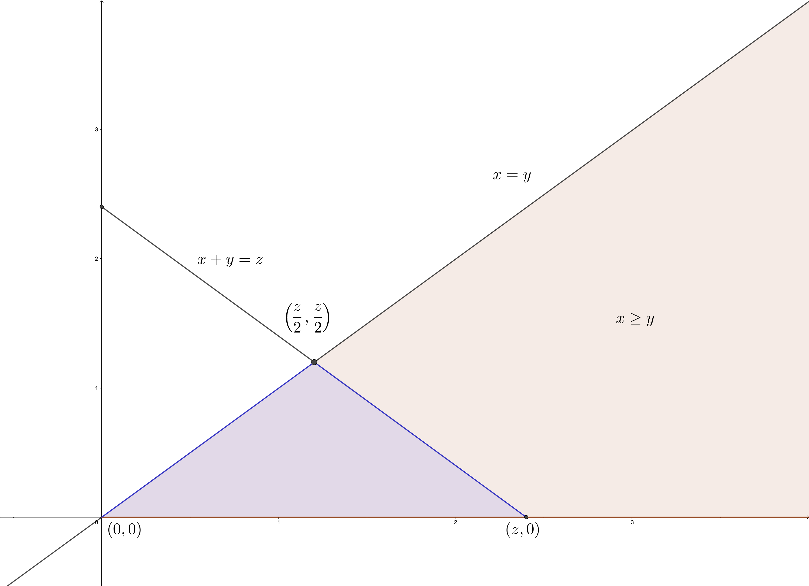
El valor de \(F_Z(z)\) será: (fijémonos que primero fijamos la \(y\) y para cada \(y\) la \(x\) va desde la recta \(x=y\) hasta la recta \(x=z-y\)) \[ \begin{array}{rl} F_Z(z) & =\int_{y=0}^{y=\frac{z}{2}}\int_{x=y}^{x=z-y}2 \mathrm{e}^{-x}\mathrm{e}^{-y}\, dx\, dy = 2 \int_{y=0}^{y=\frac{z}{2}} \mathrm{e}^{-y} \left[-\mathrm{e}^{-x}\right]_{x=y}^{x=z-y}\, dy \\ & = 2 \int_{y=0}^{y=\frac{z}{2}} \mathrm{e}^{-y} \left(\mathrm{e}^{-y}-\mathrm{e}^{y-z}\right)\, dy = 2 \int_{y=0}^{y=\frac{z}{2}} \left(\mathrm{e}^{-2y}-\mathrm{e}^{-z} \right)\, dy = 2\left[-\frac{1}{2}\mathrm{e}^{-2y}-\mathrm{e}^{-z} y\right]_{y=0}^{y=\frac{z}{2}} \\ & = 2\left(\frac{1}{2}-\frac{1}{2}\mathrm{e}^{-z}-\frac{z}{2}\mathrm{e}^{-z}\right) = 1-\mathrm{e}^{-z}(1+z),\ z\geq 0. \end{array} \] La función de densidad de \(Z\) será: \[ f_Z(z)=F'_Z(z)=z \mathrm{e}^{-z},\ z\geq 0, \] y \(f_Z(z)=0\) en caso contrario.
5.8.1.3 Ejemplo de la suma de dos normales
Consideremos el caso en que la variable aleatoria \((X,Y)\) tenga distribución normal bidimensional.
Recordemos que su función de densidad conjunta era: \[ f_{XY}(x,y)=\frac{1}{2\pi\sqrt{1-\rho^2}}\mathrm{e}^{-\frac{(x^2-2\rho xy+y^2)}{2(1-\rho^2)}},\ -\infty <x,y<\infty. \] Consideremos \(S=X+Y\). Estudiemos qué distribución tiene \(S\).
Dado un valor \(z\in\mathbb{R}\), la función de distribución de \(S\) en \(s\) será: \[ \begin{array}{rl} F_S(s) & =P(S\leq s)=\int\int_{\{(x,y)\in\mathbb{R}^2,\ |\ x+y\leq s\}}\frac{1}{2\pi\sqrt{1-\rho^2}}\mathrm{e}^{-\frac{(x^2-2\rho xy+y^2)}{2(1-\rho^2)}}\, dy\, dx \\ & = \frac{1}{2\pi\sqrt{1-\rho^2}} \int_{x=-\infty}^{x=\infty}\int_{y=-\infty}^{y=s-x}\mathrm{e}^{-\frac{(x^2-2\rho xy+y^2)}{2(1-\rho^2)}}\, dy\, dx = \frac{1}{2\pi\sqrt{1-\rho^2}} \int_{x=-\infty}^{x=\infty} \mathrm{e}^{-\frac{x^2}{2(1-\rho^2)}} \int_{y=-\infty}^{y=s-x}\mathrm{e}^{-\frac{(-2\rho xy+y^2)}{2(1-\rho^2)}}\, dy\, dx \\ &\ \qquad\mbox{hacemos el cambio siguiente en la segunda integral $t=y+x$}\\ & = \frac{1}{2\pi\sqrt{1-\rho^2}} \int_{x=-\infty}^{x=\infty} \mathrm{e}^{-\frac{x^2}{2(1-\rho^2)}} \int_{t=-\infty}^{t=s}\mathrm{e}^{-\frac{(-2\rho x(t-x)+(t-x)^2)}{2(1-\rho^2)}}\, dt\, dx \end{array} \]
\[ \begin{array}{rl} F_S(s) & = \frac{1}{2\pi\sqrt{1-\rho^2}} \int_{x=-\infty}^{x=\infty} \mathrm{e}^{-\frac{(1+\rho)x^2}{1-\rho^2}}\int_{t=-\infty}^{t=s} \mathrm{e}^{-\frac{(t^2-2(1+\rho) t x)}{2(1-\rho^2)}}\, dt\, dx \\ & = \frac{1}{2\pi\sqrt{1-\rho^2}} \int_{x=-\infty}^{x=\infty} \mathrm{e}^{-\frac{(1+\rho)x^2}{1-\rho^2}}\int_{t=-\infty}^{t=s} \mathrm{e}^{-\frac{(t-(1+\rho)x)^2}{2(1-\rho^2)}} \mathrm{e}^{\frac{(\rho+1)^2 x^2}{2(1-\rho^2)}}\, dt\, dx \\ & = \frac{1}{2\pi\sqrt{1-\rho^2}} \int_{x=-\infty}^{x=\infty} \mathrm{e}^{-\frac{x^2}{2}}\cdot \sqrt{2\pi (1-\rho^2)} F_X(s)\, dx, \\ & \mbox{ donde $F_X(s)$ es la función de distribución de una variable $X$ normal de parámetros} \\ & \mbox{ $\mu =(1+\rho)x$ y $\sigma^2=1-\rho^2$.} \\ & = \frac{1}{\sqrt{2\pi}}\int_{x=-\infty}^{x=\infty} \mathrm{e}^{-\frac{x^2}{2}}\cdot F_X(s)\, dx. \end{array} \]
Para calcular la función de densidad \(f_S(s)\) aplicamos la expresión \(f_S(s)=F'_S(s)\) y la derivación bajo el signo integral:
\[ \begin{array}{rl} f_S(s) & = \frac{1}{\sqrt{2\pi}}\int_{x=-\infty}^{x=\infty} \mathrm{e}^{-\frac{x^2}{2}}\cdot f_X(s)\, dx = \frac{1}{\sqrt{2\pi}}\int_{x=-\infty}^{x=\infty} \mathrm{e}^{-\frac{x^2}{2}}\cdot \frac{1}{\sqrt{2\pi (1-\rho^2)}}\mathrm{e}^{-\frac{(s-(1+\rho)x)^2}{2(1-\rho^2)}}\, dx \\ & = \frac{\mathrm{e}^{-\frac{s^2}{2(1-\rho^2)}}}{2\pi\sqrt{1-\rho^2}} \int_{x=-\infty}^{x=\infty} \mathrm{e}^{-\frac{(2(1+\rho) x^2-2(1+\rho)xs)}{2(1-\rho^2)}}\, dx= \frac{\mathrm{e}^{-\frac{s^2}{2(1-\rho^2)}}}{2\pi\sqrt{1-\rho^2}} \int_{x=-\infty}^{x=\infty} \mathrm{e}^{-\frac{\left(x-\frac{s}{2}\right)^2}{1-\rho}}\mathrm{e}^{\frac{s^2}{4(1-\rho)}}\, dx \end{array} \]
En la última integral hacemos el cambio \(u=x-\frac{z}{2}\): \[ f_S(s) =\frac{\mathrm{e}^{-\frac{s^2}{4(1+\rho)}}}{2\pi\sqrt{1-\rho^2}} \int_{u=-\infty}^{u=\infty} \mathrm{e}^{-\frac{u^2}{1-\rho}}\, du. \] A continuación usando que \(f_Z(z)=\frac{1}{\sqrt{2\pi}}\mathrm{e}^{-\frac{x^2}{2}}\) es la función de densidad de la distribución \(Z=N(0,1)\), podemos escribir: \(\int_{-\infty}^\infty \frac{1}{\sqrt{2\pi}}\mathrm{e}^{-\frac{x^2}{2}}=1,\ \Rightarrow \int_{-\infty}^\infty \mathrm{e}^{-\frac{x^2}{2}}=\sqrt{2\pi}.\)
Si en la última integral hacemos el cambio \(v=\sqrt{\frac{2}{1-\rho}}u\), obtenemos: \[ \begin{array}{rl} f_S(s) & = \frac{\mathrm{e}^{-\frac{s^2}{4(1+\rho)}}}{2\pi\sqrt{1-\rho^2}}\int_{v=-\infty}^{v=\infty}\mathrm{e}^{-\frac{v^2}{2}} \sqrt{\frac{1-\rho}{2}}\, dv= \frac{\mathrm{e}^{-\frac{s^2}{4(1+\rho)}}}{2\pi\sqrt{2(1+\rho)}}\int_{v=-\infty}^{v=\infty}\mathrm{e}^{-\frac{v^2}{2}} \, dv \\ & = \frac{\mathrm{e}^{-\frac{s^2}{4(1+\rho)}}}{2\pi\sqrt{2(1+\rho)}} \sqrt{2\pi}= \frac{1}{\sqrt{2\pi 2(1+\rho)}}\mathrm{e}^{-\frac{s^2}{4(1+\rho)}},\ s\in\mathbb{R}. \end{array} \]
Dicha función de densidad corresponde a una distribución normal de parámetros \(\mu =0\) y \(\sigma = \sqrt{2(1+\rho)}\).
En resumen, la distribución de la suma de dos normales es una normal de parámetros \(S=N(\mu=0,\sigma = \sqrt{2(1+\rho)})\).
5.8.2 Transformaciones lineales de variables aleatorias
Consideremos una variable aleatoria bidimensional continua \((X,Y)\) con función de densidad conjunta \(f_{XY}\).
Definimos la variable aleatoria bidimensional continua \((U,V)\) a partir de una transformación lineal de la variable \((X,Y)\). O sea, existe una matriz \(\mathbf{M}=\begin{pmatrix}a & b\\ c& d\end{pmatrix}\) y un vector \(\mathbf{n}=\begin{pmatrix}\alpha\\\beta \end{pmatrix}\) tal que: \[ \begin{array}{rl} \begin{pmatrix}U\\ V\end{pmatrix} & =\mathbf{M}\cdot \begin{pmatrix}X\\ Y\end{pmatrix}+\mathbf{n}=\begin{pmatrix}a & b\\ c& d\end{pmatrix}\cdot\begin{pmatrix}X\\ Y\end{pmatrix}+\begin{pmatrix}\alpha\\\beta \end{pmatrix},\\ & \Rightarrow \left.\begin{array}{rl}U & = aX+bY+\alpha,\\ V & =cX+dY+\beta.\end{array}\right\} \end{array} \]
Para que \((U,V)\) sea una variable aleatoria bidimensional, necesitamos que la matriz \(\mathbf{M}\) sea no singular, o \(\mathrm{det}(\mathbf{M})\neq 0\).
Nos preguntamos cuál es la relación entre la función de densidad de la variable \((U,V)\), \(f_{UV}\) y la función de densidad de la variable \((X,Y)\), \(f_{XY}\). La expresión siguiente nos da dicha relación: \[ f_{UV}(u,v)=\frac{1}{|\mathrm{det}(\mathbf{M})|}f_{XY}\left(\mathbf{M}^{-1}\begin{pmatrix}u-\alpha\\ v-\beta\end{pmatrix}\right), \ (u,v)\in\mathbb{R}^2. \]
5.8.2.1 Ejemplos
Ejemplo
Consideremos la variable \((X,Y)\) continua con función de densidad: \[ f_{XY}(x,y)=\begin{cases} \frac{1}{2}(1+x+y), & \mbox{ si }(x,y)\in R, \\ 0, & \mbox{en caso contrario.} \end{cases} \] donde \(R\) es el rombo de vértices \((1,0)\), \((0,1)\), \((-1,0)\) y \((0,-1)\), ver figura adjunta.
Otra forma de definir la función anterior sería: \[ f_{XY}(x,y)=\begin{cases} \frac{1}{2}(1+x+y), & -1\leq x\leq 0,\ -1-x\leq y\leq x+1, \\ \frac{1}{2}(1+x+y), & 0\leq x\leq 0,\ x-1\leq y\leq 1-x, \\ 0, & \mbox{en caso contrario.} \end{cases} \] Dejamos como ejercicio al lector comprobar que la función anterior es una función de densidad.
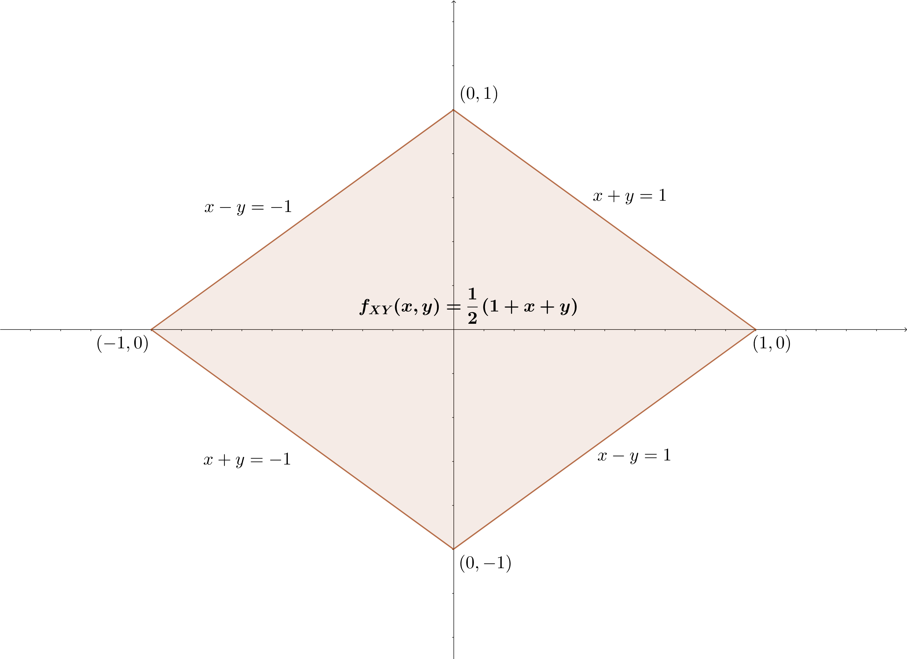
Consideramos la variable aleatoria bidimensional \((U,V)\) definida a partir de la variable \((X,Y)\): \[ \begin{pmatrix}U\\ V\end{pmatrix}=\begin{pmatrix}1 & -1\\ 1& 1\end{pmatrix}\cdot\begin{pmatrix}X\\ Y\end{pmatrix},\ \Rightarrow \left.\begin{array}{rl}U & = X-Y,\\ V & =X+Y.\end{array}\right\} \] La región \(R\) se transforma en el cuadrado \(C\) de vértices \((1,1)\), \((-1,1)\), \((-1,-1)\) y \((1,-1)\) ya que si aplicamos la matriz a los vértices del rombo, obtenemos los vértices de cuadrado: \[ \begin{array}{rl} \begin{pmatrix}1 & -1\\ 1& 1\end{pmatrix}\cdot \begin{pmatrix}1\\ 0\end{pmatrix} & =\begin{pmatrix}1\\ 1\end{pmatrix},\qquad \begin{pmatrix}1 & -1\\ 1& 1\end{pmatrix}\cdot \begin{pmatrix}0\\ 1\end{pmatrix}=\begin{pmatrix}-1\\ 1\end{pmatrix},\\ \begin{pmatrix}1 & -1\\ 1& 1\end{pmatrix}\cdot \begin{pmatrix}-1\\ 0\end{pmatrix} & =\begin{pmatrix}-1\\ -1\end{pmatrix},\qquad \begin{pmatrix}1 & -1\\ 1& 1\end{pmatrix}\cdot \begin{pmatrix}0\\ -1\end{pmatrix}=\begin{pmatrix}1\\ -1\end{pmatrix}. \end{array} \] Ver la figura adjunta.
Para hallar la función de densidad \(f_{UV}\) necesitamos escribir \(X\) e \(Y\) en función de \(U\) y \(V\): \[ \begin{pmatrix}X\\ Y\end{pmatrix}=\begin{pmatrix}1 & -1\\ 1& 1\end{pmatrix}^{-1}\cdot\begin{pmatrix}U\\ V\end{pmatrix}=\begin{pmatrix}\frac{1}{2} & \frac{1}{2}\\ -\frac{1}{2}& \frac{1}{2}\end{pmatrix}\cdot\begin{pmatrix}U\\ V\end{pmatrix},\ \Rightarrow \left.\begin{array}{rl}X & = \frac{1}{2}(U+V),\\ Y & =\frac{1}{2}(-U+V).\end{array}\right\} \]

La función de densidad \(f_{UV}\) será, por tanto, \[ \begin{array}{rl} f_{UV}(u,v) & =\frac{1}{\left|\mathrm{det}\begin{pmatrix}1 & -1\\ 1& 1\end{pmatrix}\right|}\cdot f_{XY}\left(\frac{1}{2}(u+v),\frac{1}{2}(-u+v)\right) \\ & =\frac{1}{2}\cdot \frac{1}{2}\cdot \left(1+\frac{1}{2}(-u+v)+\frac{1}{2}(u+v)\right)=\frac{1}{4}(1+v), \end{array} \] para \((u,v)\) perteneciente al cuadrado \(C\) de vértices \((1,1)\), \((-1,1)\), \((-1,-1)\) y \((1,-1)\), o si se quiere para \(-1\leq u\leq 1\), \(-1\leq v\leq 1\), y \(f_{UV}(u,v)=0\), en caso contrario.
Observamos que es más cómodo trabajar con las variables \((u,v)\) en vez de trabajar con las variables \((x,y)\) por dos razones:
- La región donde la función de densidad no es nula es más simple, ya que trabajar con un cuadrado simplifica mucho más los cálculos que trabajar con un rombo a la hora de hallar la función de distribución, densidades marginales, densidades condicionadas, valores esperados, etc.
- La expresión de la función de densidad también es más simple, ya que sólo depende de la segunda variable \(v\); sin embargo, la función de densidad inicial \(f_{XY}\) dependía de las dos variables \(x\) e \(y\).
Ejemplo
Consideremos el caso en que la variable aleatoria \((X,Y)\) tenga distribución normal bidimensional.
Recordemos que su función de densidad conjunta era: \[ f_{XY}(x,y)=\frac{1}{2\pi\sqrt{1-\rho^2}}\mathrm{e}^{-\frac{(x^2-2\rho xy+y^2)}{2(1-\rho^2)}},\ -\infty <x,y<\infty. \] Recordemos que las distribuciones marginales eran distribuciones \(N(0,1)\).
La idea es hallar la función de densidad conjunta de una distribución normal bidimensional para la que sus distribuciones marginales sean dos normales \(N(\mu_1,\sigma_1)\) y \(N(\mu_2,\sigma_2)\).
Recordemos que si \(Z=N(0,1)\), entonces \(\sigma_1\cdot Z+\mu_1 =N(\mu_1,\sigma_1)\). Este hecho, motiva que consideremos el cambio lineal siguiente a las variables \(X\) e \(Y\): \[ \begin{pmatrix}U\\ V\end{pmatrix}=\begin{pmatrix}\sigma_1 & 0\\ 0& \sigma_2\end{pmatrix}\cdot\begin{pmatrix}X\\ Y\end{pmatrix}+\begin{pmatrix}\mu_1\\\mu_2\end{pmatrix},\ \Rightarrow \left.\begin{array}{rl}U & = \sigma_1\cdot X+\mu_1,\\ V & =\sigma_2\cdot Y+\mu_2.\end{array}\right\} \]
La función de densidad conjunta \(f_{UV}\) será: \[ \begin{array}{rl} f_{UV}(u,v) & = \frac{1}{\left|\begin{pmatrix}\sigma_1 & 0\\ 0& \sigma_2\end{pmatrix}\right|} f_{XY}\left(\frac{u-\mu_1}{\sigma_1},\frac{v-\mu_2}{\sigma_2}\right) =\frac{1}{\sigma_1\cdot \sigma_2}f_{XY}\left(\frac{u-\mu_1}{\sigma_1},\frac{v-\mu_2}{\sigma_2}\right)\\ & = \frac{1}{2\pi\sigma_1\sigma_2\sqrt{1-\rho^2}}\mathrm{e}^{-\frac{\left(\left(\frac{u-\mu_1}{\sigma_1}\right)^2-2\rho \left(\frac{u-\mu_1}{\sigma_1}\right)\left(\frac{v-\mu_2}{\sigma_2}\right)+\left(\frac{v-\mu_2}{\sigma_2}\right)^2\right)}{2(1-\rho^2)}}, \end{array} \] para \((u,v)\in\mathbb{R}^2\).
Si llamamos \(\mathbf{\Sigma}\) a la matriz \(\mathbf{\Sigma}=\begin{pmatrix}\sigma_1^2 & \rho\sigma_1\sigma_2\\ \rho\sigma_1\sigma_2 & \sigma_2^2\end{pmatrix}\), llamada matriz de covarianzas de la distribución normal \((U,V)\) la función de densidad anterior puede escribirse como: \[ f_{UV}(u,v)=\frac{1}{2\pi \sqrt{\left|\mathrm{\Sigma}\right|}}\mathrm{e}^{-\frac{1}{2}(\mathbf{u}-\mathbf{\mu})^\top \mathbf{\Sigma}^{-1}(\mathbf{u}-\mathbf{\mu})},\ \mbox{donde $\mathbf{u}=\begin{pmatrix}u \\ v\end{pmatrix}$ y $\mathbf{\mu}=\begin{pmatrix}\mu_1\\\mu_2\end{pmatrix}$.} \] La variable aleatoria bidimensional \((X,Y)\) sería la variable aleatoria tipificada con respecto de la variable \((U,V)\).
5.8.3 Transformaciones generales de variables aleatorias
Consideremos una variable aleatoria bidimensional continua \((X,Y)\) con función de densidad conjunta \(f_{XY}\).
Definimos la variable aleatoria bidimensional continua \((U,V)\) a partir de una transformación general de la variable \((X,Y)\). O sea, existen dos funciones de dos variables \(g_1\) y \(g_2\) tal que: \[ U = g_1 (X,Y),\quad V = g_2 (X,Y). \] Vamos a suponer que las funciones \(g_1\) y \(g_2\) son invertibles, o sea, dados \((u,v)\), podemos encontrar \((x,y)\) tal que \(x=h_1(u,v)\) e \(y=h_2(u,v)\). Las funciones \(h_1\) y \(h_2\) serían las inversas de las funciones \(g_1\) y \(g_2\), respectivamente.
La función de densidad conjunta \(f_{UV}\) se puede expresar de la forma siguiente en función de la función de densidad conjunta \(f_{XY}\): \[ \begin{array}{rl} f_{UV}(u,v) & =\left|\mathrm{det}\begin{pmatrix}\frac{\partial h_1}{\partial u} & \frac{\partial h_1}{\partial v}\\ \frac{\partial h_2}{\partial u} & \frac{\partial h_2}{\partial v}\end{pmatrix}\right|f_{XY}(h_1(u,v),h_2(u,v))\\ & =\frac{1}{\left|\mathrm{det}\begin{pmatrix}\frac{\partial g_1}{\partial x} & \frac{\partial g_1}{\partial y}\\ \frac{\partial g_2}{\partial x} & \frac{\partial g_2}{\partial y}\end{pmatrix}\right|_{x=h_1(u,v),y=h_2(u,v)}}f_{XY}(h_1(u,v),h_2(u,v)). \end{array} \]
A la matriz \(\begin{pmatrix}\frac{\partial g_1}{\partial x} & \frac{\partial g_1}{\partial y}\\ \frac{\partial g_2}{\partial x} & \frac{\partial g_2}{\partial y}\end{pmatrix}\) se le llama matriz jacobiana del cambio y a la matriz \(\begin{pmatrix}\frac{\partial h_1}{\partial u} & \frac{\partial h_1}{\partial v}\\ \frac{\partial h_2}{\partial u} & \frac{\partial h_2}{\partial v}\end{pmatrix}\), matriz jacobiana del cambio inverso.
5.8.3.1 Ejemplos
Ejemplo. Cambio a polares
Sea \((X,Y)\) una variable aleatoria bidimensional cuya función de densidad conjunta es: \[ f_{XY}(x,y)= \begin{cases} \frac{2}{\pi}\left(x^2 + y^2\right), & \mbox{si }(x,y)\in D_1, \\ 0, & \mbox{en caso contrario,} \end{cases} \] donde \(D_1\) es el disco de radio \(1\): \[ D_1 = \{(x,y)\in\mathbb{R}^2,\ | \ x^2+y^2\leq 1\}. \] El cambio a polares consiste en considerar las coordenadas polares \((r,\alpha)\) de un punto cualquiera \((x,y)\) del plano, ver figura adjunta. El cambio que pasa de \((r,\alpha)\) a \((x,y)\) (fijaos que sería el cambio inverso, según nuestra notación o \(h_1\)y \(h_2\), respectivamente) sería: \[ x=h_1(r,\alpha)=r\cdot \cos\alpha,\quad y=h_2(r,\alpha)=r\cdot \sin\alpha. \]

Fijémonos que, con el cambio a polares, el disco unidad \(D_1\) se transforma en el rectángulo \([0,1]\times [0,2\pi]\).
Hallemos el jacobiano del cambio inverso: \[ \mathrm{det}\begin{pmatrix}\frac{\partial h_1}{\partial u} & \frac{\partial h_1}{\partial v}\\ \frac{\partial h_2}{\partial u} & \frac{\partial h_2}{\partial v}\end{pmatrix} =\mathrm{det}\begin{pmatrix}\cos\alpha & -r\sin\alpha\\ \sin\alpha & r\cdot\cos\alpha\end{pmatrix} = r. \] La función de densidad conjunta \(f_{r\alpha}\) en las nuevas variables (polares) será: \[ f_{r\alpha}(r,\alpha)=r\cdot \frac{2}{\pi}\left((r\cos\alpha)^2+(r\sin\alpha)^2\right)=\frac{2}{\pi}\cdot r^3, \] si \((r,\alpha)\in [0,1]\times [0,2\pi]\).
Podemos comentar que, gracias al cambio a polares, en este caso, es mucho más sencillo y cómodo trabajar con las variables \((r,\alpha)\) en vez de trabajar con las variables \((x,y)\) por dos razones:
- La región donde la función de densidad no es nula es más simple, ya que trabajar con un rectángulo simplifica mucho más los cálculos que trabajar con un disco a la hora de hallar la función de distribución, densidades marginales, densidades condicionadas, valores esperados, etc.
Por ejemplo, comprobar que el área de la función de densidad conjunta \(f_{r\alpha}\) da \(1\) es trivial: \[ \int_{r=0}^{r=1}\int_{\alpha =0}^{\alpha =2\pi}\frac{2}{\pi} r^3\, d\alpha\, dr = \frac{2}{\pi}\cdot 2\pi \left[\frac{r^4}{4}\right]_{r=0}^{r=1}=4\cdot \frac{1}{4}=1. \]
- La expresión de la función de densidad también es más simple, ya que sólo depende de la primera variable \(r\); sin embargo, la función de densidad inicial \(f_{XY}\) dependía de las dos variables \(x\) e \(y\).